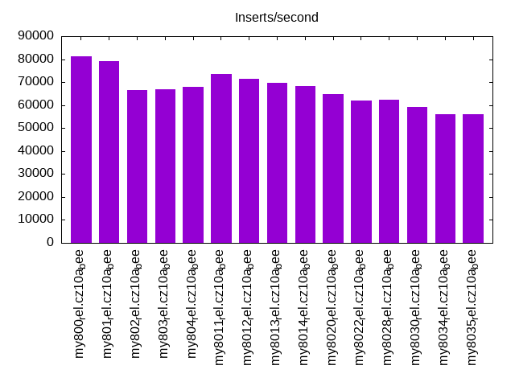
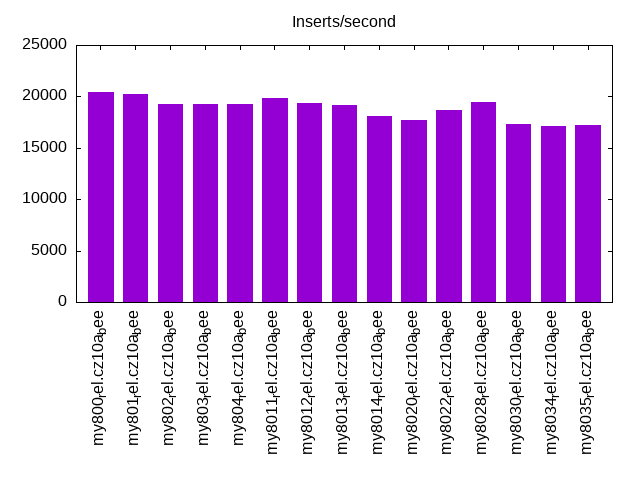
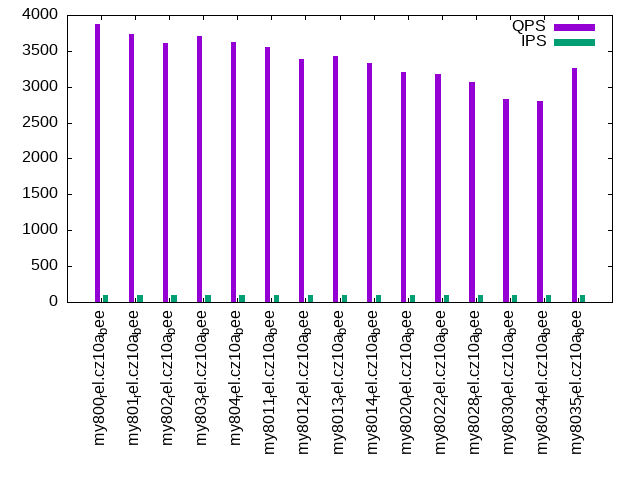
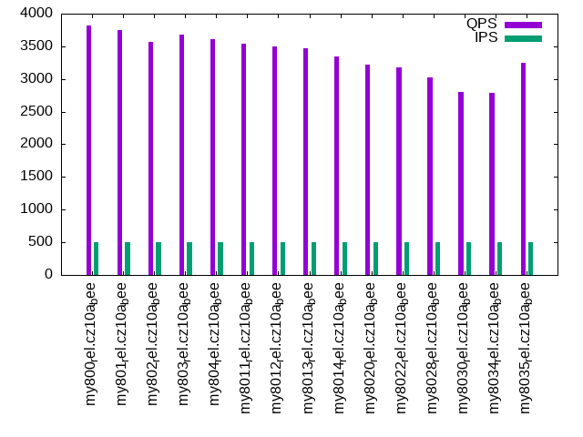
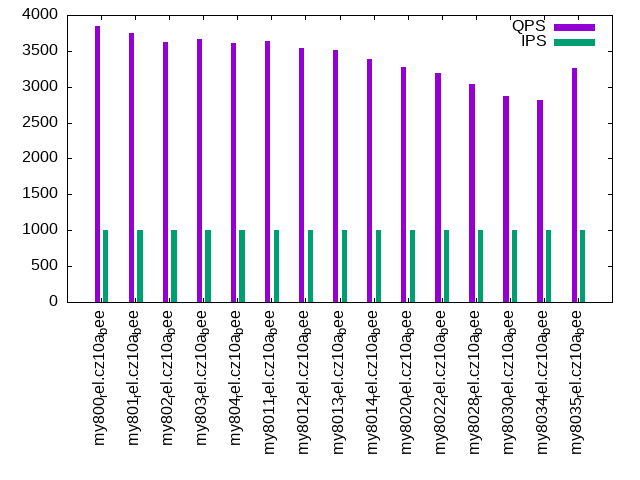

Introduction
This is a report for the insert benchmark with 20M docs and 1 client(s). It is generated by scripts (bash, awk, sed) and Tufte might not be impressed. An overview of the insert benchmark is here and a short update is here. Below, by DBMS, I mean DBMS+version.config. An example is my8020.c10b40 where my means MySQL, 8020 is version 8.0.20 and c10b40 is the name for the configuration file.
The test server has 8 AMD cores, 16G RAM and an NVMe SSD. It is described here as the Beelink. The benchmark was run with 1 client and there were 1 or 3 connections per client (1 for queries or inserts without rate limits, 1+1 for rate limited inserts+deletes). It uses 1 table. It loads 20M rows per table without secondary indexes, creates secondary indexes, then inserts 50M rows per table with a delete per insert to avoid growing the table. It then does 3 read+write tests for 1800s each that do queries as fast as possible with 100, 500 and then 1000 inserts/second/client concurrent with the queries and 1000 deletes/second to avoid growing the table. The database is cached by InnoDB. Clients and the DBMS share one server. The per-database configs are in the per-database subdirectories here.
The tested DBMS are:
- my800_rel.cz10a_bee - MySQL 8.0.0 with InnoDB, rel build, cz10a_bee config
- my801_rel.cz10a_bee - MySQL 8.0.1 with InnoDB, rel build, cz10a_bee config
- my802_rel.cz10a_bee - MySQL 8.0.2 with InnoDB, rel build, cz10a_bee config
- my803_rel.cz10a_bee - MySQL 8.0.3 with InnoDB, rel build, cz10a_bee config
- my804_rel.cz10a_bee - MySQL 8.0.4 with InnoDB, rel build, cz10a_bee config
- my8011_rel.cz10a_bee - MySQL 8.0.11 with InnoDB, rel build, cz10a_bee config
- my8012_rel.cz10a_bee - MySQL 8.0.12 with InnoDB, rel build, cz10a_bee config
- my8013_rel.cz10a_bee - MySQL 8.0.13 with InnoDB, rel build, cz10a_bee config
- my8014_rel.cz10a_bee - MySQL 8.0.14 with InnoDB, rel build, cz10a_bee config
- my8020_rel.cz10a_bee - MySQL 8.0.20 with InnoDB, rel build, cz10a_bee config
- my8022_rel.cz10a_bee - MySQL 8.0.22 with InnoDB, rel build, cz10a_bee config
- my8028_rel.cz10a_bee - MySQL 8.0.28 with InnoDB, rel build, cz10a_bee config
- my8030_rel.cz10a_bee - MySQL 8.0.30 with InnoDB, rel build, cz10a_bee config
- my8035_rel.cz10a_bee - MySQL 8.0.35 with InnoDB, rel build, cz10a_bee config
- my8034_rel.cz10a_bee - MySQL 8.0.34 with InnoDB, rel build, cz10a_bee config
Contents
- Summary
- l.i0: load without secondary indexes
- l.x: create secondary indexes
- l.i1: continue load after secondary indexes created
- q100.1: range queries with 100 insert/s per client
- q500.1: range queries with 500 insert/s per client
- q1000.1: range queries with 1000 insert/s per client
Summary
The numbers are inserts/s for l.i0 and l.i1, indexed docs (or rows) /s for l.x and queries/s for q*.2. The values are the average rate over the entire test for inserts (IPS) and queries (QPS). The range of values for IPS and QPS is split into 3 parts: bottom 25%, middle 50%, top 25%. Values in the bottom 25% have a red background, values in the top 25% have a green background and values in the middle have no color. A gray background is used for values that can be ignored because the DBMS did not sustain the target insert rate. Red backgrounds are not used when the minimum value is within 80% of the max value.
| dbms | l.i0 | l.x | l.i1 | q100.1 | q500.1 | q1000.1 |
|---|---|---|---|---|---|---|
| my800_rel.cz10a_bee | 81301 | 152273 | 20442 | 3870 | 3824 | 3841 |
| my801_rel.cz10a_bee | 79051 | 151128 | 20210 | 3738 | 3751 | 3747 |
| my802_rel.cz10a_bee | 66445 | 150000 | 19231 | 3608 | 3570 | 3622 |
| my803_rel.cz10a_bee | 66890 | 150000 | 19298 | 3702 | 3673 | 3659 |
| my804_rel.cz10a_bee | 67797 | 143571 | 19275 | 3617 | 3604 | 3610 |
| my8011_rel.cz10a_bee | 73529 | 141549 | 19802 | 3551 | 3540 | 3639 |
| my8012_rel.cz10a_bee | 71428 | 147794 | 19335 | 3390 | 3499 | 3538 |
| my8013_rel.cz10a_bee | 69686 | 140559 | 19164 | 3429 | 3468 | 3519 |
| my8014_rel.cz10a_bee | 68259 | 138621 | 18142 | 3325 | 3340 | 3390 |
| my8020_rel.cz10a_bee | 64725 | 133112 | 17718 | 3205 | 3214 | 3279 |
| my8022_rel.cz10a_bee | 62112 | 127215 | 18706 | 3171 | 3175 | 3185 |
| my8028_rel.cz10a_bee | 62500 | 155814 | 19440 | 3064 | 3020 | 3044 |
| my8030_rel.cz10a_bee | 59172 | 143571 | 17361 | 2832 | 2806 | 2873 |
| my8034_rel.cz10a_bee | 56022 | 142553 | 17153 | 2808 | 2784 | 2810 |
| my8035_rel.cz10a_bee | 56022 | 140559 | 17206 | 3261 | 3246 | 3267 |
This table has relative throughput, throughput for the DBMS relative to the DBMS in the first line, using the absolute throughput from the previous table. Values less than 0.95 have a yellow background. Values greater than 1.05 have a blue background.
| dbms | l.i0 | l.x | l.i1 | q100.1 | q500.1 | q1000.1 |
|---|---|---|---|---|---|---|
| my800_rel.cz10a_bee | 1.00 | 1.00 | 1.00 | 1.00 | 1.00 | 1.00 |
| my801_rel.cz10a_bee | 0.97 | 0.99 | 0.99 | 0.97 | 0.98 | 0.98 |
| my802_rel.cz10a_bee | 0.82 | 0.99 | 0.94 | 0.93 | 0.93 | 0.94 |
| my803_rel.cz10a_bee | 0.82 | 0.99 | 0.94 | 0.96 | 0.96 | 0.95 |
| my804_rel.cz10a_bee | 0.83 | 0.94 | 0.94 | 0.93 | 0.94 | 0.94 |
| my8011_rel.cz10a_bee | 0.90 | 0.93 | 0.97 | 0.92 | 0.93 | 0.95 |
| my8012_rel.cz10a_bee | 0.88 | 0.97 | 0.95 | 0.88 | 0.92 | 0.92 |
| my8013_rel.cz10a_bee | 0.86 | 0.92 | 0.94 | 0.89 | 0.91 | 0.92 |
| my8014_rel.cz10a_bee | 0.84 | 0.91 | 0.89 | 0.86 | 0.87 | 0.88 |
| my8020_rel.cz10a_bee | 0.80 | 0.87 | 0.87 | 0.83 | 0.84 | 0.85 |
| my8022_rel.cz10a_bee | 0.76 | 0.84 | 0.92 | 0.82 | 0.83 | 0.83 |
| my8028_rel.cz10a_bee | 0.77 | 1.02 | 0.95 | 0.79 | 0.79 | 0.79 |
| my8030_rel.cz10a_bee | 0.73 | 0.94 | 0.85 | 0.73 | 0.73 | 0.75 |
| my8034_rel.cz10a_bee | 0.69 | 0.94 | 0.84 | 0.73 | 0.73 | 0.73 |
| my8035_rel.cz10a_bee | 0.69 | 0.92 | 0.84 | 0.84 | 0.85 | 0.85 |
This lists the average rate of inserts/s for the tests that do inserts concurrent with queries. For such tests the query rate is listed in the table above. The read+write tests are setup so that the insert rate should match the target rate every second. Cells that are not at least 95% of the target have a red background to indicate a failure to satisfy the target.
| dbms | q100.1 | q500.1 | q1000.1 |
|---|---|---|---|
| my800_rel.cz10a_bee | 100 | 499 | 997 |
| my801_rel.cz10a_bee | 100 | 499 | 998 |
| my802_rel.cz10a_bee | 100 | 499 | 998 |
| my803_rel.cz10a_bee | 100 | 499 | 998 |
| my804_rel.cz10a_bee | 100 | 499 | 998 |
| my8011_rel.cz10a_bee | 100 | 499 | 998 |
| my8012_rel.cz10a_bee | 100 | 499 | 998 |
| my8013_rel.cz10a_bee | 100 | 499 | 998 |
| my8014_rel.cz10a_bee | 100 | 499 | 998 |
| my8020_rel.cz10a_bee | 100 | 499 | 998 |
| my8022_rel.cz10a_bee | 100 | 499 | 998 |
| my8028_rel.cz10a_bee | 100 | 499 | 998 |
| my8030_rel.cz10a_bee | 100 | 499 | 998 |
| my8034_rel.cz10a_bee | 100 | 499 | 998 |
| my8035_rel.cz10a_bee | 100 | 499 | 997 |
| target | 100 | 500 | 1000 |
l.i0
l.i0: load without secondary indexes. Graphs for performance per 1-second interval are here.
Average throughput:
Insert response time histogram: each cell has the percentage of responses that take <= the time in the header and max is the max response time in seconds. For the max column values in the top 25% of the range have a red background and in the bottom 25% of the range have a green background. The red background is not used when the min value is within 80% of the max value.
| dbms | 256us | 1ms | 4ms | 16ms | 64ms | 256ms | 1s | 4s | 16s | gt | max |
|---|---|---|---|---|---|---|---|---|---|---|---|
| my800_rel.cz10a_bee | 0.036 | 99.650 | 0.307 | 0.004 | 0.002 | 0.108 | |||||
| my801_rel.cz10a_bee | 0.012 | 99.681 | 0.299 | 0.006 | 0.002 | 0.095 | |||||
| my802_rel.cz10a_bee | 99.638 | 0.353 | 0.007 | 0.001 | 0.067 | ||||||
| my803_rel.cz10a_bee | 99.639 | 0.356 | 0.005 | 0.001 | 0.066 | ||||||
| my804_rel.cz10a_bee | 99.641 | 0.353 | 0.006 | 0.063 | |||||||
| my8011_rel.cz10a_bee | 99.591 | 0.345 | 0.064 | 0.058 | |||||||
| my8012_rel.cz10a_bee | 99.593 | 0.338 | 0.069 | 0.061 | |||||||
| my8013_rel.cz10a_bee | 99.583 | 0.346 | 0.071 | 0.063 | |||||||
| my8014_rel.cz10a_bee | 99.444 | 0.468 | 0.089 | 0.064 | |||||||
| my8020_rel.cz10a_bee | 99.381 | 0.456 | 0.161 | 0.002 | 0.072 | ||||||
| my8022_rel.cz10a_bee | 99.572 | 0.246 | 0.178 | 0.004 | 0.104 | ||||||
| my8028_rel.cz10a_bee | 99.449 | 0.408 | 0.140 | 0.003 | 0.085 | ||||||
| my8030_rel.cz10a_bee | 99.428 | 0.449 | 0.120 | 0.003 | 0.081 | ||||||
| my8034_rel.cz10a_bee | 99.405 | 0.451 | 0.142 | 0.003 | 0.071 | ||||||
| my8035_rel.cz10a_bee | 99.406 | 0.454 | 0.137 | 0.003 | 0.071 |
Performance metrics for the DBMS listed above. Some are normalized by throughput, others are not. Legend for results is here.
ips qps rps rmbps wps wmbps rpq rkbpq wpi wkbpi csps cpups cspq cpupq dbgb1 dbgb2 rss maxop p50 p99 tag 81301 0 0 0.0 204.4 23.5 0.000 0.000 0.003 0.296 8324 21.5 0.102 21 1.3 17.9 2.3 0.108 81455 71021 20m.my800_rel.cz10a_bee 79051 0 0 0.0 200.6 23.0 0.000 0.000 0.003 0.298 8154 21.6 0.103 22 1.3 17.9 2.3 0.095 79698 73417 20m.my801_rel.cz10a_bee 66445 0 0 0.0 178.9 19.8 0.000 0.000 0.003 0.305 6942 21.4 0.104 26 1.3 17.9 2.4 0.067 66626 61132 20m.my802_rel.cz10a_bee 66890 0 0 0.0 181.4 20.1 0.000 0.000 0.003 0.308 7008 21.3 0.105 25 1.3 17.9 2.4 0.066 67322 61783 20m.my803_rel.cz10a_bee 67797 0 0 0.0 185.7 20.4 0.000 0.000 0.003 0.309 7063 21.6 0.104 25 1.3 17.9 2.4 0.063 67930 60825 20m.my804_rel.cz10a_bee 73529 0 954 3.7 205.5 22.3 0.013 0.052 0.003 0.311 59298 35.2 0.806 38 1.3 17.9 2.5 0.058 73589 68466 20m.my8011_rel.cz10a_bee 71428 0 936 3.7 197.1 21.7 0.013 0.052 0.003 0.310 57751 35.7 0.809 40 1.3 17.9 2.4 0.061 71388 65825 20m.my8012_rel.cz10a_bee 69686 0 903 3.5 195.7 21.2 0.013 0.052 0.003 0.311 57105 36.0 0.819 41 1.3 17.9 2.4 0.063 69425 64670 20m.my8013_rel.cz10a_bee 68259 0 858 3.4 193.7 20.8 0.013 0.050 0.003 0.312 19556 23.2 0.286 27 1.3 17.9 2.4 0.064 68225 62073 20m.my8014_rel.cz10a_bee 64725 0 0 0.0 202.2 19.3 0.000 0.000 0.003 0.306 16602 22.7 0.256 28 1.3 17.9 2.4 0.072 65429 59331 20m.my8020_rel.cz10a_bee 62112 0 0 0.0 193.4 18.5 0.000 0.000 0.003 0.306 6472 20.5 0.104 26 1.3 17.9 2.4 0.104 62634 55751 20m.my8022_rel.cz10a_bee 62500 0 0 0.0 191.7 18.6 0.000 0.000 0.003 0.305 6602 20.4 0.106 26 1.3 17.9 2.4 0.085 62932 53928 20m.my8028_rel.cz10a_bee 59172 0 0 0.0 212.2 18.6 0.000 0.000 0.004 0.321 6538 20.2 0.110 27 1.3 17.9 2.4 0.081 59431 53341 20m.my8030_rel.cz10a_bee 56022 0 0 0.0 189.0 17.2 0.000 0.000 0.003 0.315 6213 20.0 0.111 29 1.3 17.9 2.5 0.071 56241 51645 20m.my8034_rel.cz10a_bee 56022 0 0 0.0 189.4 17.3 0.000 0.000 0.003 0.316 6219 20.0 0.111 29 1.3 17.9 2.5 0.071 56414 51444 20m.my8035_rel.cz10a_bee
l.x
l.x: create secondary indexes.
Average throughput:

Performance metrics for the DBMS listed above. Some are normalized by throughput, others are not. Legend for results is here.
ips qps rps rmbps wps wmbps rpq rkbpq wpi wkbpi csps cpups cspq cpupq dbgb1 dbgb2 rss maxop p50 p99 tag 152273 0 0 0.0 1434.3 130.1 0.000 0.000 0.009 0.875 8677 12.3 0.057 6 3.0 19.5 3.3 0.013 NA NA 20m.my800_rel.cz10a_bee 151128 0 0 0.0 1412.2 128.5 0.000 0.000 0.009 0.871 8383 12.4 0.055 7 3.0 19.5 3.3 0.012 NA NA 20m.my801_rel.cz10a_bee 150000 0 0 0.0 1394.5 127.7 0.000 0.000 0.009 0.872 8096 12.5 0.054 7 3.0 19.5 3.3 0.013 NA NA 20m.my802_rel.cz10a_bee 150000 0 0 0.0 1394.7 127.3 0.000 0.000 0.009 0.869 7835 12.4 0.052 7 3.0 19.5 3.3 0.007 NA NA 20m.my803_rel.cz10a_bee 143571 0 0 0.0 1326.0 122.0 0.000 0.000 0.009 0.870 7155 12.3 0.050 7 3.0 19.5 3.4 0.013 NA NA 20m.my804_rel.cz10a_bee 141549 0 0 0.0 1333.5 121.6 0.000 0.000 0.009 0.879 12656 14.2 0.089 8 3.0 19.5 3.4 0.012 NA NA 20m.my8011_rel.cz10a_bee 147794 0 0 0.0 1377.6 125.7 0.000 0.000 0.009 0.871 13609 14.2 0.092 8 3.0 19.5 3.4 0.012 NA NA 20m.my8012_rel.cz10a_bee 140559 0 0 0.0 1292.1 119.7 0.000 0.000 0.009 0.872 12694 14.4 0.090 8 3.0 19.5 3.4 0.013 NA NA 20m.my8013_rel.cz10a_bee 138621 0 0 0.0 1523.6 121.7 0.000 0.000 0.011 0.899 9995 12.5 0.072 7 3.0 19.5 3.4 0.010 NA NA 20m.my8014_rel.cz10a_bee 133112 0 0 0.0 1405.7 109.2 0.000 0.000 0.011 0.840 8650 12.0 0.065 7 3.0 19.5 3.0 0.019 NA NA 20m.my8020_rel.cz10a_bee 127215 0 0 0.0 1068.6 101.0 0.000 0.000 0.008 0.813 6711 11.8 0.053 7 3.0 19.5 3.0 0.028 NA NA 20m.my8022_rel.cz10a_bee 155814 0 790 51.4 2140.4 150.2 0.005 0.338 0.014 0.987 9143 43.1 0.059 22 3.0 19.5 3.6 0.011 NA NA 20m.my8028_rel.cz10a_bee 143571 0 706 45.9 2939.3 150.8 0.005 0.328 0.020 1.076 10691 41.7 0.074 23 3.0 19.5 3.1 0.012 NA NA 20m.my8030_rel.cz10a_bee 142553 0 706 45.9 2640.0 146.1 0.005 0.330 0.019 1.049 9973 43.0 0.070 24 3.0 19.5 3.0 0.011 NA NA 20m.my8034_rel.cz10a_bee 140559 0 706 45.9 2214.0 138.8 0.005 0.335 0.016 1.011 9323 42.4 0.066 24 3.0 19.5 3.1 0.020 NA NA 20m.my8035_rel.cz10a_bee
l.i1
l.i1: continue load after secondary indexes created. Graphs for performance per 1-second interval are here.
Average throughput:
Insert response time histogram: each cell has the percentage of responses that take <= the time in the header and max is the max response time in seconds. For the max column values in the top 25% of the range have a red background and in the bottom 25% of the range have a green background. The red background is not used when the min value is within 80% of the max value.
| dbms | 256us | 1ms | 4ms | 16ms | 64ms | 256ms | 1s | 4s | 16s | gt | max |
|---|---|---|---|---|---|---|---|---|---|---|---|
| my800_rel.cz10a_bee | 97.084 | 2.877 | 0.036 | 0.003 | 0.095 | ||||||
| my801_rel.cz10a_bee | 96.990 | 2.972 | 0.036 | 0.002 | 0.088 | ||||||
| my802_rel.cz10a_bee | 96.958 | 3.010 | 0.030 | 0.002 | 0.087 | ||||||
| my803_rel.cz10a_bee | 96.983 | 2.987 | 0.028 | 0.002 | 0.103 | ||||||
| my804_rel.cz10a_bee | 96.909 | 3.056 | 0.034 | 0.002 | 0.087 | ||||||
| my8011_rel.cz10a_bee | 97.763 | 1.910 | 0.315 | 0.012 | 0.136 | ||||||
| my8012_rel.cz10a_bee | 97.689 | 1.958 | 0.343 | 0.010 | 0.121 | ||||||
| my8013_rel.cz10a_bee | 97.689 | 1.985 | 0.315 | 0.011 | 0.151 | ||||||
| my8014_rel.cz10a_bee | 96.997 | 2.696 | 0.304 | 0.002 | 0.092 | ||||||
| my8020_rel.cz10a_bee | 97.174 | 2.480 | 0.298 | 0.048 | 0.221 | ||||||
| my8022_rel.cz10a_bee | 97.545 | 2.355 | 0.094 | 0.006 | 0.109 | ||||||
| my8028_rel.cz10a_bee | 97.484 | 2.422 | 0.092 | 0.003 | 0.110 | ||||||
| my8030_rel.cz10a_bee | 96.864 | 3.005 | 0.128 | 0.003 | 0.104 | ||||||
| my8034_rel.cz10a_bee | 96.695 | 3.168 | 0.137 | 0.001 | 0.105 | ||||||
| my8035_rel.cz10a_bee | 96.659 | 3.206 | 0.135 | 0.001 | 0.104 |
Delete response time histogram: each cell has the percentage of responses that take <= the time in the header and max is the max response time in seconds. For the max column values in the top 25% of the range have a red background and in the bottom 25% of the range have a green background. The red background is not used when the min value is within 80% of the max value.
| dbms | 256us | 1ms | 4ms | 16ms | 64ms | 256ms | 1s | 4s | 16s | gt | max |
|---|---|---|---|---|---|---|---|---|---|---|---|
| my800_rel.cz10a_bee | 97.782 | 2.206 | 0.009 | 0.003 | 0.096 | ||||||
| my801_rel.cz10a_bee | 97.698 | 2.290 | 0.009 | 0.002 | 0.087 | ||||||
| my802_rel.cz10a_bee | 97.758 | 2.229 | 0.011 | 0.002 | 0.090 | ||||||
| my803_rel.cz10a_bee | 97.761 | 2.227 | 0.010 | 0.002 | 0.098 | ||||||
| my804_rel.cz10a_bee | 97.684 | 2.303 | 0.012 | 0.002 | 0.088 | ||||||
| my8011_rel.cz10a_bee | 98.509 | 1.259 | 0.223 | 0.009 | 0.121 | ||||||
| my8012_rel.cz10a_bee | 98.503 | 1.250 | 0.240 | 0.006 | 0.120 | ||||||
| my8013_rel.cz10a_bee | 98.554 | 1.220 | 0.219 | 0.007 | 0.137 | ||||||
| my8014_rel.cz10a_bee | 97.955 | 1.804 | 0.240 | 0.001 | 0.100 | ||||||
| my8020_rel.cz10a_bee | 98.451 | 1.267 | 0.251 | 0.031 | 0.182 | ||||||
| my8022_rel.cz10a_bee | 98.370 | 1.600 | 0.029 | 0.002 | 0.103 | ||||||
| my8028_rel.cz10a_bee | 98.289 | 1.682 | 0.027 | 0.003 | 0.110 | ||||||
| my8030_rel.cz10a_bee | 97.937 | 2.016 | 0.045 | 0.002 | 0.103 | ||||||
| my8034_rel.cz10a_bee | 97.919 | 2.039 | 0.042 | 0.001 | 0.103 | ||||||
| my8035_rel.cz10a_bee | 97.896 | 2.054 | 0.049 | 0.001 | 0.103 |
Performance metrics for the DBMS listed above. Some are normalized by throughput, others are not. Legend for results is here.
ips qps rps rmbps wps wmbps rpq rkbpq wpi wkbpi csps cpups cspq cpupq dbgb1 dbgb2 rss maxop p50 p99 tag 20442 0 0 0.0 1779.9 77.9 0.000 0.000 0.087 3.904 13794 37.8 0.675 148 4.4 20.9 5.5 0.095 20984 7990 20m.my800_rel.cz10a_bee 20210 0 0 0.0 1846.8 79.7 0.000 0.000 0.091 4.036 13932 37.7 0.689 149 4.4 20.9 5.6 0.088 20727 7795 20m.my801_rel.cz10a_bee 19231 0 0 0.0 1701.4 75.3 0.000 0.000 0.088 4.012 13240 37.0 0.688 154 4.2 20.9 5.4 0.087 19828 8644 20m.my802_rel.cz10a_bee 19298 0 0 0.0 1686.2 74.8 0.000 0.000 0.087 3.970 13167 37.1 0.682 154 4.2 21.0 5.5 0.103 19851 8597 20m.my803_rel.cz10a_bee 19275 0 0 0.0 1765.8 76.8 0.000 0.000 0.092 4.080 13495 37.2 0.700 154 4.3 21.0 5.6 0.087 19788 8394 20m.my804_rel.cz10a_bee 19802 0 0 0.0 1778.5 77.0 0.000 0.000 0.090 3.982 63912 51.4 3.228 208 4.4 21.1 5.7 0.136 20428 6693 20m.my8011_rel.cz10a_bee 19335 0 0 0.0 1714.4 74.1 0.000 0.000 0.089 3.924 62660 51.2 3.241 212 4.4 21.2 5.7 0.121 19881 5943 20m.my8012_rel.cz10a_bee 19164 0 0 0.0 1645.6 72.1 0.000 0.000 0.086 3.850 62572 51.1 3.265 213 4.4 21.1 5.7 0.151 19731 5544 20m.my8013_rel.cz10a_bee 18142 0 0 0.0 1564.3 68.1 0.000 0.000 0.086 3.842 27287 38.6 1.504 170 4.4 21.2 5.7 0.092 18630 5745 20m.my8014_rel.cz10a_bee 17718 0 33 0.5 1908.6 70.0 0.002 0.030 0.108 4.045 26795 37.6 1.512 170 4.2 20.9 5.5 0.221 18729 4445 20m.my8020_rel.cz10a_bee 18706 0 35 0.5 1917.1 70.8 0.002 0.030 0.102 3.875 11708 36.7 0.626 157 4.3 21.1 5.6 0.109 19329 4244 20m.my8022_rel.cz10a_bee 19440 0 36 0.6 2007.6 74.3 0.002 0.030 0.103 3.911 14157 36.7 0.728 151 4.3 21.1 5.6 0.110 20127 6099 20m.my8028_rel.cz10a_bee 17361 0 32 0.5 2285.0 85.6 0.002 0.030 0.132 5.047 14377 36.7 0.828 169 4.3 21.1 5.6 0.104 17930 5744 20m.my8030_rel.cz10a_bee 17153 0 32 0.5 2303.2 86.0 0.002 0.030 0.134 5.135 14335 36.4 0.836 170 4.3 21.1 5.6 0.105 17788 4795 20m.my8034_rel.cz10a_bee 17206 0 32 0.5 2371.3 87.9 0.002 0.030 0.138 5.229 14581 36.3 0.847 169 4.3 21.0 5.6 0.104 17839 4894 20m.my8035_rel.cz10a_bee
q100.1
q100.1: range queries with 100 insert/s per client. Graphs for performance per 1-second interval are here.
Average throughput:
Query response time histogram: each cell has the percentage of responses that take <= the time in the header and max is the max response time in seconds. For max values in the top 25% of the range have a red background and in the bottom 25% of the range have a green background. The red background is not used when the min value is within 80% of the max value.
| dbms | 256us | 1ms | 4ms | 16ms | 64ms | 256ms | 1s | 4s | 16s | gt | max |
|---|---|---|---|---|---|---|---|---|---|---|---|
| my800_rel.cz10a_bee | 64.580 | 35.420 | nonzero | 0.003 | |||||||
| my801_rel.cz10a_bee | 60.289 | 39.710 | 0.001 | nonzero | 0.005 | ||||||
| my802_rel.cz10a_bee | 55.025 | 44.974 | nonzero | 0.003 | |||||||
| my803_rel.cz10a_bee | 59.291 | 40.708 | nonzero | 0.003 | |||||||
| my804_rel.cz10a_bee | 55.357 | 44.643 | nonzero | 0.004 | |||||||
| my8011_rel.cz10a_bee | 51.484 | 48.515 | nonzero | nonzero | 0.005 | ||||||
| my8012_rel.cz10a_bee | 42.054 | 57.946 | nonzero | 0.003 | |||||||
| my8013_rel.cz10a_bee | 44.080 | 55.920 | nonzero | 0.003 | |||||||
| my8014_rel.cz10a_bee | 35.826 | 64.174 | nonzero | 0.003 | |||||||
| my8020_rel.cz10a_bee | 30.522 | 69.478 | nonzero | 0.003 | |||||||
| my8022_rel.cz10a_bee | 28.178 | 71.821 | nonzero | 0.003 | |||||||
| my8028_rel.cz10a_bee | 24.378 | 75.621 | 0.001 | 0.004 | |||||||
| my8030_rel.cz10a_bee | 6.442 | 93.558 | 0.001 | nonzero | 0.005 | ||||||
| my8034_rel.cz10a_bee | 4.185 | 95.814 | 0.001 | 0.004 | |||||||
| my8035_rel.cz10a_bee | 32.401 | 67.599 | nonzero | 0.003 |
Insert response time histogram: each cell has the percentage of responses that take <= the time in the header and max is the max response time in seconds. For max values in the top 25% of the range have a red background and in the bottom 25% of the range have a green background. The red background is not used when the min value is within 80% of the max value.
| dbms | 256us | 1ms | 4ms | 16ms | 64ms | 256ms | 1s | 4s | 16s | gt | max |
|---|---|---|---|---|---|---|---|---|---|---|---|
| my800_rel.cz10a_bee | 99.583 | 0.417 | 0.015 | ||||||||
| my801_rel.cz10a_bee | 99.194 | 0.806 | 0.012 | ||||||||
| my802_rel.cz10a_bee | 99.417 | 0.583 | 0.011 | ||||||||
| my803_rel.cz10a_bee | 99.444 | 0.556 | 0.013 | ||||||||
| my804_rel.cz10a_bee | 99.444 | 0.556 | 0.009 | ||||||||
| my8011_rel.cz10a_bee | 97.111 | 2.889 | 0.014 | ||||||||
| my8012_rel.cz10a_bee | 97.389 | 2.583 | 0.028 | 0.020 | |||||||
| my8013_rel.cz10a_bee | 96.750 | 3.222 | 0.028 | 0.018 | |||||||
| my8014_rel.cz10a_bee | 97.222 | 2.750 | 0.028 | 0.020 | |||||||
| my8020_rel.cz10a_bee | 97.222 | 2.778 | 0.013 | ||||||||
| my8022_rel.cz10a_bee | 99.611 | 0.361 | 0.028 | 0.017 | |||||||
| my8028_rel.cz10a_bee | 99.833 | 0.167 | 0.015 | ||||||||
| my8030_rel.cz10a_bee | 99.556 | 0.444 | 0.014 | ||||||||
| my8034_rel.cz10a_bee | 99.417 | 0.556 | 0.028 | 0.023 | |||||||
| my8035_rel.cz10a_bee | 99.639 | 0.333 | 0.028 | 0.016 |
Delete response time histogram: each cell has the percentage of responses that take <= the time in the header and max is the max response time in seconds. For max values in the top 25% of the range have a red background and in the bottom 25% of the range have a green background. The red background is not used when the min value is within 80% of the max value.
| dbms | 256us | 1ms | 4ms | 16ms | 64ms | 256ms | 1s | 4s | 16s | gt | max |
|---|---|---|---|---|---|---|---|---|---|---|---|
| my800_rel.cz10a_bee | 99.667 | 0.333 | 0.012 | ||||||||
| my801_rel.cz10a_bee | 99.361 | 0.639 | 0.012 | ||||||||
| my802_rel.cz10a_bee | 99.611 | 0.389 | 0.011 | ||||||||
| my803_rel.cz10a_bee | 99.472 | 0.528 | 0.013 | ||||||||
| my804_rel.cz10a_bee | 99.583 | 0.417 | 0.008 | ||||||||
| my8011_rel.cz10a_bee | 98.583 | 1.417 | 0.013 | ||||||||
| my8012_rel.cz10a_bee | 98.611 | 1.389 | 0.013 | ||||||||
| my8013_rel.cz10a_bee | 98.361 | 1.639 | 0.014 | ||||||||
| my8014_rel.cz10a_bee | 98.333 | 1.667 | 0.012 | ||||||||
| my8020_rel.cz10a_bee | 98.750 | 1.250 | 0.013 | ||||||||
| my8022_rel.cz10a_bee | 99.639 | 0.361 | 0.009 | ||||||||
| my8028_rel.cz10a_bee | 99.889 | 0.111 | 0.014 | ||||||||
| my8030_rel.cz10a_bee | 99.694 | 0.306 | 0.008 | ||||||||
| my8034_rel.cz10a_bee | 99.806 | 0.167 | 0.028 | 0.024 | |||||||
| my8035_rel.cz10a_bee | 99.833 | 0.167 | 0.013 |
Performance metrics for the DBMS listed above. Some are normalized by throughput, others are not. Legend for results is here.
ips qps rps rmbps wps wmbps rpq rkbpq wpi wkbpi csps cpups cspq cpupq dbgb1 dbgb2 rss maxop p50 p99 tag 100 3870 0 0.0 56.8 1.7 0.000 0.000 0.569 17.558 15106 12.7 3.904 263 4.4 20.9 5.5 0.003 3825 3532 20m.my800_rel.cz10a_bee 100 3738 0 0.0 62.7 1.9 0.000 0.000 0.629 19.411 14644 12.9 3.917 276 4.4 20.9 5.6 0.005 3721 3422 20m.my801_rel.cz10a_bee 100 3608 0 0.0 63.0 1.9 0.000 0.000 0.632 19.475 14156 12.8 3.923 284 4.2 20.9 5.4 0.003 3581 3323 20m.my802_rel.cz10a_bee 100 3702 0 0.0 58.5 1.8 0.000 0.000 0.587 18.071 14496 12.7 3.916 274 4.2 21.0 5.5 0.003 3675 3390 20m.my803_rel.cz10a_bee 100 3617 0 0.0 55.4 1.7 0.000 0.000 0.556 17.103 14153 12.8 3.913 283 4.3 21.0 5.6 0.004 3596 3340 20m.my804_rel.cz10a_bee 100 3551 0 0.0 70.5 2.1 0.000 0.000 0.707 21.635 14984 13.0 4.219 293 4.4 21.1 5.7 0.005 3532 3262 20m.my8011_rel.cz10a_bee 100 3390 0 0.0 69.5 2.1 0.000 0.000 0.697 21.311 14405 13.1 4.249 309 4.4 21.2 5.7 0.003 3388 3164 20m.my8012_rel.cz10a_bee 100 3429 0 0.0 65.5 2.0 0.000 0.000 0.657 20.093 14531 12.9 4.237 301 4.4 21.1 5.7 0.003 3420 3180 20m.my8013_rel.cz10a_bee 100 3325 0 0.0 69.0 2.1 0.000 0.000 0.692 21.177 13648 12.8 4.104 308 4.4 21.2 5.7 0.003 3308 3102 20m.my8014_rel.cz10a_bee 100 3205 0 0.0 65.1 1.7 0.000 0.000 0.652 17.010 13173 12.6 4.110 314 4.2 20.9 5.5 0.003 3196 2989 20m.my8020_rel.cz10a_bee 100 3171 0 0.0 66.5 1.7 0.000 0.000 0.667 17.520 12449 12.5 3.925 315 4.3 21.1 5.6 0.003 3164 2989 20m.my8022_rel.cz10a_bee 100 3064 0 0.0 83.4 2.0 0.000 0.000 0.836 20.557 12163 12.7 3.969 332 4.3 21.1 5.6 0.004 3053 2877 20m.my8028_rel.cz10a_bee 100 2832 0 0.0 99.7 2.4 0.000 0.000 1.000 24.955 11510 12.6 4.065 356 4.3 21.1 5.6 0.005 2823 2654 20m.my8030_rel.cz10a_bee 100 2808 0 0.0 91.0 2.2 0.000 0.000 0.912 22.765 11384 12.7 4.054 362 4.3 21.1 5.6 0.004 2797 2653 20m.my8034_rel.cz10a_bee 100 3261 0 0.0 89.2 2.2 0.000 0.000 0.894 22.300 13096 12.6 4.015 309 4.3 21.0 5.6 0.003 3244 3018 20m.my8035_rel.cz10a_bee
q500.1
q500.1: range queries with 500 insert/s per client. Graphs for performance per 1-second interval are here.
Average throughput:
Query response time histogram: each cell has the percentage of responses that take <= the time in the header and max is the max response time in seconds. For max values in the top 25% of the range have a red background and in the bottom 25% of the range have a green background. The red background is not used when the min value is within 80% of the max value.
| dbms | 256us | 1ms | 4ms | 16ms | 64ms | 256ms | 1s | 4s | 16s | gt | max |
|---|---|---|---|---|---|---|---|---|---|---|---|
| my800_rel.cz10a_bee | 63.241 | 36.759 | nonzero | nonzero | 0.004 | ||||||
| my801_rel.cz10a_bee | 60.963 | 39.036 | nonzero | nonzero | 0.005 | ||||||
| my802_rel.cz10a_bee | 53.337 | 46.663 | nonzero | nonzero | 0.005 | ||||||
| my803_rel.cz10a_bee | 58.217 | 41.783 | nonzero | nonzero | 0.005 | ||||||
| my804_rel.cz10a_bee | 54.402 | 45.598 | nonzero | nonzero | 0.008 | ||||||
| my8011_rel.cz10a_bee | 51.548 | 48.452 | nonzero | nonzero | 0.012 | ||||||
| my8012_rel.cz10a_bee | 47.290 | 52.710 | nonzero | nonzero | 0.005 | ||||||
| my8013_rel.cz10a_bee | 46.304 | 53.696 | 0.001 | 0.004 | |||||||
| my8014_rel.cz10a_bee | 36.591 | 63.409 | nonzero | nonzero | 0.004 | ||||||
| my8020_rel.cz10a_bee | 31.549 | 68.450 | 0.001 | 0.003 | |||||||
| my8022_rel.cz10a_bee | 28.720 | 71.279 | nonzero | nonzero | 0.005 | ||||||
| my8028_rel.cz10a_bee | 21.761 | 78.239 | nonzero | 0.003 | |||||||
| my8030_rel.cz10a_bee | 4.725 | 95.274 | 0.001 | 0.003 | |||||||
| my8034_rel.cz10a_bee | 3.660 | 96.339 | 0.001 | nonzero | 0.006 | ||||||
| my8035_rel.cz10a_bee | 31.557 | 68.442 | 0.001 | nonzero | 0.005 |
Insert response time histogram: each cell has the percentage of responses that take <= the time in the header and max is the max response time in seconds. For max values in the top 25% of the range have a red background and in the bottom 25% of the range have a green background. The red background is not used when the min value is within 80% of the max value.
| dbms | 256us | 1ms | 4ms | 16ms | 64ms | 256ms | 1s | 4s | 16s | gt | max |
|---|---|---|---|---|---|---|---|---|---|---|---|
| my800_rel.cz10a_bee | 99.494 | 0.506 | 0.012 | ||||||||
| my801_rel.cz10a_bee | 99.511 | 0.483 | 0.006 | 0.017 | |||||||
| my802_rel.cz10a_bee | 99.372 | 0.628 | 0.016 | ||||||||
| my803_rel.cz10a_bee | 99.367 | 0.633 | 0.013 | ||||||||
| my804_rel.cz10a_bee | 99.356 | 0.644 | 0.014 | ||||||||
| my8011_rel.cz10a_bee | 98.294 | 1.656 | 0.050 | 0.021 | |||||||
| my8012_rel.cz10a_bee | 97.633 | 2.328 | 0.039 | 0.021 | |||||||
| my8013_rel.cz10a_bee | 98.083 | 1.906 | 0.011 | 0.021 | |||||||
| my8014_rel.cz10a_bee | 97.389 | 2.600 | 0.011 | 0.029 | |||||||
| my8020_rel.cz10a_bee | 96.267 | 3.689 | 0.044 | 0.022 | |||||||
| my8022_rel.cz10a_bee | 99.500 | 0.494 | 0.006 | 0.016 | |||||||
| my8028_rel.cz10a_bee | 99.606 | 0.389 | 0.006 | 0.016 | |||||||
| my8030_rel.cz10a_bee | 99.583 | 0.406 | 0.011 | 0.024 | |||||||
| my8034_rel.cz10a_bee | 99.383 | 0.617 | 0.015 | ||||||||
| my8035_rel.cz10a_bee | 99.389 | 0.600 | 0.011 | 0.025 |
Delete response time histogram: each cell has the percentage of responses that take <= the time in the header and max is the max response time in seconds. For max values in the top 25% of the range have a red background and in the bottom 25% of the range have a green background. The red background is not used when the min value is within 80% of the max value.
| dbms | 256us | 1ms | 4ms | 16ms | 64ms | 256ms | 1s | 4s | 16s | gt | max |
|---|---|---|---|---|---|---|---|---|---|---|---|
| my800_rel.cz10a_bee | 99.683 | 0.317 | 0.012 | ||||||||
| my801_rel.cz10a_bee | 99.611 | 0.389 | 0.010 | ||||||||
| my802_rel.cz10a_bee | 99.583 | 0.417 | 0.016 | ||||||||
| my803_rel.cz10a_bee | 99.572 | 0.428 | 0.015 | ||||||||
| my804_rel.cz10a_bee | 99.539 | 0.461 | 0.014 | ||||||||
| my8011_rel.cz10a_bee | 98.778 | 1.217 | 0.006 | 0.018 | |||||||
| my8012_rel.cz10a_bee | 98.233 | 1.750 | 0.017 | 0.020 | |||||||
| my8013_rel.cz10a_bee | 98.767 | 1.233 | 0.015 | ||||||||
| my8014_rel.cz10a_bee | 98.061 | 1.917 | 0.022 | 0.020 | |||||||
| my8020_rel.cz10a_bee | 97.178 | 2.794 | 0.028 | 0.021 | |||||||
| my8022_rel.cz10a_bee | 99.656 | 0.344 | 0.015 | ||||||||
| my8028_rel.cz10a_bee | 99.778 | 0.222 | 0.014 | ||||||||
| my8030_rel.cz10a_bee | 99.844 | 0.150 | 0.006 | 0.025 | |||||||
| my8034_rel.cz10a_bee | 99.800 | 0.200 | 0.014 | ||||||||
| my8035_rel.cz10a_bee | 99.733 | 0.256 | 0.011 | 0.024 |
Performance metrics for the DBMS listed above. Some are normalized by throughput, others are not. Legend for results is here.
ips qps rps rmbps wps wmbps rpq rkbpq wpi wkbpi csps cpups cspq cpupq dbgb1 dbgb2 rss maxop p50 p99 tag 499 3824 0 0.0 25.2 1.1 0.000 0.000 0.051 2.333 14961 13.8 3.913 289 4.4 20.9 5.5 0.004 3788 3515 20m.my800_rel.cz10a_bee 499 3751 0 0.0 24.3 1.1 0.000 0.000 0.049 2.276 14671 13.7 3.911 292 4.4 20.9 5.6 0.005 3708 3435 20m.my801_rel.cz10a_bee 499 3570 0 0.0 24.6 1.1 0.000 0.000 0.049 2.237 13992 13.6 3.919 305 4.2 20.9 5.4 0.005 3551 3292 20m.my802_rel.cz10a_bee 499 3673 0 0.0 31.2 1.3 0.000 0.000 0.063 2.568 14422 13.8 3.926 301 4.2 21.0 5.5 0.005 3660 3358 20m.my803_rel.cz10a_bee 499 3604 0 0.0 30.5 1.2 0.000 0.000 0.061 2.533 14147 13.8 3.925 306 4.3 21.0 5.6 0.008 3582 3340 20m.my804_rel.cz10a_bee 499 3540 0 0.0 16.4 0.9 0.000 0.000 0.033 1.877 16492 14.2 4.659 321 4.4 21.1 5.7 0.012 3524 3212 20m.my8011_rel.cz10a_bee 499 3499 0 0.0 18.0 0.9 0.000 0.000 0.036 1.866 16477 14.1 4.709 322 4.4 21.2 5.7 0.005 3484 3212 20m.my8012_rel.cz10a_bee 499 3468 0 0.0 17.5 1.0 0.000 0.000 0.035 2.007 16257 14.0 4.687 323 4.4 21.1 5.7 0.004 3467 3181 20m.my8013_rel.cz10a_bee 499 3340 0 0.0 20.1 1.0 0.000 0.000 0.040 1.965 14033 13.9 4.201 333 4.4 21.2 5.7 0.004 3324 3116 20m.my8014_rel.cz10a_bee 499 3214 0 0.0 36.6 1.2 0.000 0.000 0.073 2.556 13694 13.7 4.260 341 4.2 20.9 5.5 0.003 3212 2989 20m.my8020_rel.cz10a_bee 499 3175 0 0.0 35.7 1.3 0.000 0.000 0.072 2.607 12522 13.4 3.944 338 4.3 21.1 5.6 0.005 3166 2991 20m.my8022_rel.cz10a_bee 499 3020 0 0.0 25.1 1.0 0.000 0.000 0.050 1.957 11942 13.4 3.954 355 4.3 21.1 5.6 0.003 3021 2844 20m.my8028_rel.cz10a_bee 499 2806 0 0.0 38.2 1.4 0.000 0.000 0.076 2.940 11300 13.4 4.027 382 4.3 21.1 5.6 0.003 2797 2654 20m.my8030_rel.cz10a_bee 499 2784 0 0.0 44.7 1.6 0.000 0.000 0.090 3.278 11244 13.5 4.038 388 4.3 21.1 5.6 0.006 2767 2622 20m.my8034_rel.cz10a_bee 499 3246 0 0.0 45.6 1.6 0.000 0.000 0.091 3.337 13021 13.5 4.012 333 4.3 21.0 5.6 0.005 3229 3020 20m.my8035_rel.cz10a_bee
q1000.1
q1000.1: range queries with 1000 insert/s per client. Graphs for performance per 1-second interval are here.
Average throughput:
Query response time histogram: each cell has the percentage of responses that take <= the time in the header and max is the max response time in seconds. For max values in the top 25% of the range have a red background and in the bottom 25% of the range have a green background. The red background is not used when the min value is within 80% of the max value.
| dbms | 256us | 1ms | 4ms | 16ms | 64ms | 256ms | 1s | 4s | 16s | gt | max |
|---|---|---|---|---|---|---|---|---|---|---|---|
| my800_rel.cz10a_bee | 63.954 | 36.045 | 0.001 | nonzero | 0.008 | ||||||
| my801_rel.cz10a_bee | 60.513 | 39.486 | 0.001 | nonzero | 0.013 | ||||||
| my802_rel.cz10a_bee | 55.449 | 44.550 | 0.001 | nonzero | 0.010 | ||||||
| my803_rel.cz10a_bee | 57.293 | 42.706 | 0.001 | nonzero | 0.005 | ||||||
| my804_rel.cz10a_bee | 54.913 | 45.086 | 0.001 | nonzero | 0.007 | ||||||
| my8011_rel.cz10a_bee | 55.132 | 44.866 | 0.002 | nonzero | 0.010 | ||||||
| my8012_rel.cz10a_bee | 49.374 | 50.624 | 0.002 | nonzero | 0.008 | ||||||
| my8013_rel.cz10a_bee | 48.155 | 51.843 | 0.002 | nonzero | 0.006 | ||||||
| my8014_rel.cz10a_bee | 39.509 | 60.490 | 0.001 | nonzero | 0.006 | ||||||
| my8020_rel.cz10a_bee | 35.044 | 64.954 | 0.002 | nonzero | 0.007 | ||||||
| my8022_rel.cz10a_bee | 29.524 | 70.474 | 0.002 | nonzero | 0.004 | ||||||
| my8028_rel.cz10a_bee | 23.276 | 76.723 | 0.001 | 0.004 | |||||||
| my8030_rel.cz10a_bee | 9.104 | 90.893 | 0.003 | 0.004 | |||||||
| my8034_rel.cz10a_bee | 5.633 | 94.365 | 0.003 | nonzero | 0.004 | ||||||
| my8035_rel.cz10a_bee | 33.728 | 66.270 | 0.002 | nonzero | 0.004 |
Insert response time histogram: each cell has the percentage of responses that take <= the time in the header and max is the max response time in seconds. For max values in the top 25% of the range have a red background and in the bottom 25% of the range have a green background. The red background is not used when the min value is within 80% of the max value.
| dbms | 256us | 1ms | 4ms | 16ms | 64ms | 256ms | 1s | 4s | 16s | gt | max |
|---|---|---|---|---|---|---|---|---|---|---|---|
| my800_rel.cz10a_bee | 99.300 | 0.692 | 0.008 | 0.050 | |||||||
| my801_rel.cz10a_bee | 99.550 | 0.447 | 0.003 | 0.050 | |||||||
| my802_rel.cz10a_bee | 99.267 | 0.731 | 0.003 | 0.049 | |||||||
| my803_rel.cz10a_bee | 99.547 | 0.450 | 0.003 | 0.051 | |||||||
| my804_rel.cz10a_bee | 99.544 | 0.453 | 0.003 | 0.051 | |||||||
| my8011_rel.cz10a_bee | 95.264 | 4.606 | 0.131 | 0.046 | |||||||
| my8012_rel.cz10a_bee | 96.389 | 3.533 | 0.078 | 0.052 | |||||||
| my8013_rel.cz10a_bee | 95.961 | 3.992 | 0.047 | 0.046 | |||||||
| my8014_rel.cz10a_bee | 96.067 | 3.872 | 0.061 | 0.040 | |||||||
| my8020_rel.cz10a_bee | 95.853 | 4.086 | 0.058 | 0.003 | 0.070 | ||||||
| my8022_rel.cz10a_bee | 99.081 | 0.911 | 0.008 | 0.059 | |||||||
| my8028_rel.cz10a_bee | 99.511 | 0.483 | 0.006 | 0.058 | |||||||
| my8030_rel.cz10a_bee | 97.261 | 2.717 | 0.022 | 0.043 | |||||||
| my8034_rel.cz10a_bee | 97.267 | 2.711 | 0.022 | 0.035 | |||||||
| my8035_rel.cz10a_bee | 97.719 | 2.261 | 0.019 | 0.051 |
Delete response time histogram: each cell has the percentage of responses that take <= the time in the header and max is the max response time in seconds. For max values in the top 25% of the range have a red background and in the bottom 25% of the range have a green background. The red background is not used when the min value is within 80% of the max value.
| dbms | 256us | 1ms | 4ms | 16ms | 64ms | 256ms | 1s | 4s | 16s | gt | max |
|---|---|---|---|---|---|---|---|---|---|---|---|
| my800_rel.cz10a_bee | 99.497 | 0.500 | 0.003 | 0.016 | |||||||
| my801_rel.cz10a_bee | 99.719 | 0.275 | 0.006 | 0.047 | |||||||
| my802_rel.cz10a_bee | 99.556 | 0.442 | 0.003 | 0.042 | |||||||
| my803_rel.cz10a_bee | 99.736 | 0.261 | 0.003 | 0.050 | |||||||
| my804_rel.cz10a_bee | 99.753 | 0.244 | 0.003 | 0.056 | |||||||
| my8011_rel.cz10a_bee | 95.903 | 4.008 | 0.089 | 0.041 | |||||||
| my8012_rel.cz10a_bee | 96.608 | 3.356 | 0.036 | 0.053 | |||||||
| my8013_rel.cz10a_bee | 96.575 | 3.383 | 0.042 | 0.048 | |||||||
| my8014_rel.cz10a_bee | 96.622 | 3.344 | 0.033 | 0.040 | |||||||
| my8020_rel.cz10a_bee | 96.569 | 3.378 | 0.053 | 0.061 | |||||||
| my8022_rel.cz10a_bee | 99.625 | 0.372 | 0.003 | 0.016 | |||||||
| my8028_rel.cz10a_bee | 99.772 | 0.214 | 0.014 | 0.049 | |||||||
| my8030_rel.cz10a_bee | 99.172 | 0.819 | 0.008 | 0.050 | |||||||
| my8034_rel.cz10a_bee | 99.264 | 0.725 | 0.011 | 0.043 | |||||||
| my8035_rel.cz10a_bee | 99.547 | 0.450 | 0.003 | 0.024 |
Performance metrics for the DBMS listed above. Some are normalized by throughput, others are not. Legend for results is here.
ips qps rps rmbps wps wmbps rpq rkbpq wpi wkbpi csps cpups cspq cpupq dbgb1 dbgb2 rss maxop p50 p99 tag 997 3841 0 0.0 106.0 4.0 0.000 0.000 0.106 4.108 15449 15.0 4.023 312 4.4 20.9 5.5 0.008 3805 3500 20m.my800_rel.cz10a_bee 998 3747 0 0.0 107.0 4.0 0.000 0.000 0.107 4.153 15082 14.9 4.025 318 4.4 20.9 5.6 0.013 3710 3438 20m.my801_rel.cz10a_bee 998 3622 0 0.0 113.7 4.2 0.000 0.000 0.114 4.317 14629 15.0 4.039 331 4.2 20.9 5.4 0.010 3611 3341 20m.my802_rel.cz10a_bee 998 3659 0 0.0 114.5 4.2 0.000 0.000 0.115 4.316 14780 14.9 4.039 326 4.2 21.0 5.5 0.005 3628 3359 20m.my803_rel.cz10a_bee 998 3610 0 0.0 112.5 4.2 0.000 0.000 0.113 4.261 14579 14.9 4.038 330 4.3 21.0 5.6 0.007 3583 3325 20m.my804_rel.cz10a_bee 998 3639 0 0.0 116.6 4.2 0.000 0.000 0.117 4.298 19578 15.3 5.380 336 4.4 21.1 5.7 0.010 3612 3260 20m.my8011_rel.cz10a_bee 998 3538 0 0.0 115.5 4.2 0.000 0.000 0.116 4.291 19260 15.3 5.444 346 4.4 21.2 5.7 0.008 3516 3228 20m.my8012_rel.cz10a_bee 998 3519 0 0.0 114.5 4.1 0.000 0.000 0.115 4.249 19237 15.3 5.466 348 4.4 21.1 5.7 0.006 3499 3188 20m.my8013_rel.cz10a_bee 998 3390 0 0.0 115.4 4.2 0.000 0.000 0.116 4.309 15207 15.0 4.486 354 4.4 21.2 5.7 0.006 3372 3132 20m.my8014_rel.cz10a_bee 998 3279 0 0.0 131.3 4.1 0.000 0.000 0.132 4.249 14949 15.2 4.560 371 4.2 20.9 5.5 0.007 3260 3005 20m.my8020_rel.cz10a_bee 998 3185 0 0.0 129.9 4.2 0.000 0.000 0.130 4.267 12899 14.4 4.050 362 4.3 21.1 5.6 0.004 3167 2989 20m.my8022_rel.cz10a_bee 998 3044 0 0.0 129.6 4.1 0.000 0.000 0.130 4.241 12469 14.5 4.097 381 4.3 21.1 5.6 0.004 3035 2857 20m.my8028_rel.cz10a_bee 998 2873 0 0.0 224.7 6.8 0.000 0.000 0.225 6.962 12300 14.7 4.282 409 4.3 21.1 5.6 0.004 2860 2670 20m.my8030_rel.cz10a_bee 998 2810 0 0.0 190.4 5.9 0.000 0.000 0.191 6.057 11957 14.8 4.254 421 4.3 21.1 5.6 0.004 2797 2637 20m.my8034_rel.cz10a_bee 997 3267 0 0.0 188.4 5.9 0.000 0.000 0.189 6.019 13701 14.8 4.193 362 4.3 21.0 5.6 0.004 3260 3021 20m.my8035_rel.cz10a_bee
l.i0
l.i0: load without secondary indexes
Performance metrics for all DBMS, not just the ones listed above. Some are normalized by throughput, others are not. Legend for results is here.
ips qps rps rmbps wps wmbps rpq rkbpq wpi wkbpi csps cpups cspq cpupq dbgb1 dbgb2 rss maxop p50 p99 tag 81301 0 0 0.0 204.4 23.5 0.000 0.000 0.003 0.296 8324 21.5 0.102 21 1.3 17.9 2.3 0.108 81455 71021 20m.my800_rel.cz10a_bee 79051 0 0 0.0 200.6 23.0 0.000 0.000 0.003 0.298 8154 21.6 0.103 22 1.3 17.9 2.3 0.095 79698 73417 20m.my801_rel.cz10a_bee 66445 0 0 0.0 178.9 19.8 0.000 0.000 0.003 0.305 6942 21.4 0.104 26 1.3 17.9 2.4 0.067 66626 61132 20m.my802_rel.cz10a_bee 66890 0 0 0.0 181.4 20.1 0.000 0.000 0.003 0.308 7008 21.3 0.105 25 1.3 17.9 2.4 0.066 67322 61783 20m.my803_rel.cz10a_bee 67797 0 0 0.0 185.7 20.4 0.000 0.000 0.003 0.309 7063 21.6 0.104 25 1.3 17.9 2.4 0.063 67930 60825 20m.my804_rel.cz10a_bee 73529 0 954 3.7 205.5 22.3 0.013 0.052 0.003 0.311 59298 35.2 0.806 38 1.3 17.9 2.5 0.058 73589 68466 20m.my8011_rel.cz10a_bee 71428 0 936 3.7 197.1 21.7 0.013 0.052 0.003 0.310 57751 35.7 0.809 40 1.3 17.9 2.4 0.061 71388 65825 20m.my8012_rel.cz10a_bee 69686 0 903 3.5 195.7 21.2 0.013 0.052 0.003 0.311 57105 36.0 0.819 41 1.3 17.9 2.4 0.063 69425 64670 20m.my8013_rel.cz10a_bee 68259 0 858 3.4 193.7 20.8 0.013 0.050 0.003 0.312 19556 23.2 0.286 27 1.3 17.9 2.4 0.064 68225 62073 20m.my8014_rel.cz10a_bee 64725 0 0 0.0 202.2 19.3 0.000 0.000 0.003 0.306 16602 22.7 0.256 28 1.3 17.9 2.4 0.072 65429 59331 20m.my8020_rel.cz10a_bee 62112 0 0 0.0 193.4 18.5 0.000 0.000 0.003 0.306 6472 20.5 0.104 26 1.3 17.9 2.4 0.104 62634 55751 20m.my8022_rel.cz10a_bee 62500 0 0 0.0 191.7 18.6 0.000 0.000 0.003 0.305 6602 20.4 0.106 26 1.3 17.9 2.4 0.085 62932 53928 20m.my8028_rel.cz10a_bee 59172 0 0 0.0 212.2 18.6 0.000 0.000 0.004 0.321 6538 20.2 0.110 27 1.3 17.9 2.4 0.081 59431 53341 20m.my8030_rel.cz10a_bee 56022 0 0 0.0 189.0 17.2 0.000 0.000 0.003 0.315 6213 20.0 0.111 29 1.3 17.9 2.5 0.071 56241 51645 20m.my8034_rel.cz10a_bee 56022 0 0 0.0 189.4 17.3 0.000 0.000 0.003 0.316 6219 20.0 0.111 29 1.3 17.9 2.5 0.071 56414 51444 20m.my8035_rel.cz10a_bee
l.x
l.x: create secondary indexes
Performance metrics for all DBMS, not just the ones listed above. Some are normalized by throughput, others are not. Legend for results is here.
ips qps rps rmbps wps wmbps rpq rkbpq wpi wkbpi csps cpups cspq cpupq dbgb1 dbgb2 rss maxop p50 p99 tag 152273 0 0 0.0 1434.3 130.1 0.000 0.000 0.009 0.875 8677 12.3 0.057 6 3.0 19.5 3.3 0.013 NA NA 20m.my800_rel.cz10a_bee 151128 0 0 0.0 1412.2 128.5 0.000 0.000 0.009 0.871 8383 12.4 0.055 7 3.0 19.5 3.3 0.012 NA NA 20m.my801_rel.cz10a_bee 150000 0 0 0.0 1394.5 127.7 0.000 0.000 0.009 0.872 8096 12.5 0.054 7 3.0 19.5 3.3 0.013 NA NA 20m.my802_rel.cz10a_bee 150000 0 0 0.0 1394.7 127.3 0.000 0.000 0.009 0.869 7835 12.4 0.052 7 3.0 19.5 3.3 0.007 NA NA 20m.my803_rel.cz10a_bee 143571 0 0 0.0 1326.0 122.0 0.000 0.000 0.009 0.870 7155 12.3 0.050 7 3.0 19.5 3.4 0.013 NA NA 20m.my804_rel.cz10a_bee 141549 0 0 0.0 1333.5 121.6 0.000 0.000 0.009 0.879 12656 14.2 0.089 8 3.0 19.5 3.4 0.012 NA NA 20m.my8011_rel.cz10a_bee 147794 0 0 0.0 1377.6 125.7 0.000 0.000 0.009 0.871 13609 14.2 0.092 8 3.0 19.5 3.4 0.012 NA NA 20m.my8012_rel.cz10a_bee 140559 0 0 0.0 1292.1 119.7 0.000 0.000 0.009 0.872 12694 14.4 0.090 8 3.0 19.5 3.4 0.013 NA NA 20m.my8013_rel.cz10a_bee 138621 0 0 0.0 1523.6 121.7 0.000 0.000 0.011 0.899 9995 12.5 0.072 7 3.0 19.5 3.4 0.010 NA NA 20m.my8014_rel.cz10a_bee 133112 0 0 0.0 1405.7 109.2 0.000 0.000 0.011 0.840 8650 12.0 0.065 7 3.0 19.5 3.0 0.019 NA NA 20m.my8020_rel.cz10a_bee 127215 0 0 0.0 1068.6 101.0 0.000 0.000 0.008 0.813 6711 11.8 0.053 7 3.0 19.5 3.0 0.028 NA NA 20m.my8022_rel.cz10a_bee 155814 0 790 51.4 2140.4 150.2 0.005 0.338 0.014 0.987 9143 43.1 0.059 22 3.0 19.5 3.6 0.011 NA NA 20m.my8028_rel.cz10a_bee 143571 0 706 45.9 2939.3 150.8 0.005 0.328 0.020 1.076 10691 41.7 0.074 23 3.0 19.5 3.1 0.012 NA NA 20m.my8030_rel.cz10a_bee 142553 0 706 45.9 2640.0 146.1 0.005 0.330 0.019 1.049 9973 43.0 0.070 24 3.0 19.5 3.0 0.011 NA NA 20m.my8034_rel.cz10a_bee 140559 0 706 45.9 2214.0 138.8 0.005 0.335 0.016 1.011 9323 42.4 0.066 24 3.0 19.5 3.1 0.020 NA NA 20m.my8035_rel.cz10a_bee
l.i1
l.i1: continue load after secondary indexes created
Performance metrics for all DBMS, not just the ones listed above. Some are normalized by throughput, others are not. Legend for results is here.
ips qps rps rmbps wps wmbps rpq rkbpq wpi wkbpi csps cpups cspq cpupq dbgb1 dbgb2 rss maxop p50 p99 tag 20442 0 0 0.0 1779.9 77.9 0.000 0.000 0.087 3.904 13794 37.8 0.675 148 4.4 20.9 5.5 0.095 20984 7990 20m.my800_rel.cz10a_bee 20210 0 0 0.0 1846.8 79.7 0.000 0.000 0.091 4.036 13932 37.7 0.689 149 4.4 20.9 5.6 0.088 20727 7795 20m.my801_rel.cz10a_bee 19231 0 0 0.0 1701.4 75.3 0.000 0.000 0.088 4.012 13240 37.0 0.688 154 4.2 20.9 5.4 0.087 19828 8644 20m.my802_rel.cz10a_bee 19298 0 0 0.0 1686.2 74.8 0.000 0.000 0.087 3.970 13167 37.1 0.682 154 4.2 21.0 5.5 0.103 19851 8597 20m.my803_rel.cz10a_bee 19275 0 0 0.0 1765.8 76.8 0.000 0.000 0.092 4.080 13495 37.2 0.700 154 4.3 21.0 5.6 0.087 19788 8394 20m.my804_rel.cz10a_bee 19802 0 0 0.0 1778.5 77.0 0.000 0.000 0.090 3.982 63912 51.4 3.228 208 4.4 21.1 5.7 0.136 20428 6693 20m.my8011_rel.cz10a_bee 19335 0 0 0.0 1714.4 74.1 0.000 0.000 0.089 3.924 62660 51.2 3.241 212 4.4 21.2 5.7 0.121 19881 5943 20m.my8012_rel.cz10a_bee 19164 0 0 0.0 1645.6 72.1 0.000 0.000 0.086 3.850 62572 51.1 3.265 213 4.4 21.1 5.7 0.151 19731 5544 20m.my8013_rel.cz10a_bee 18142 0 0 0.0 1564.3 68.1 0.000 0.000 0.086 3.842 27287 38.6 1.504 170 4.4 21.2 5.7 0.092 18630 5745 20m.my8014_rel.cz10a_bee 17718 0 33 0.5 1908.6 70.0 0.002 0.030 0.108 4.045 26795 37.6 1.512 170 4.2 20.9 5.5 0.221 18729 4445 20m.my8020_rel.cz10a_bee 18706 0 35 0.5 1917.1 70.8 0.002 0.030 0.102 3.875 11708 36.7 0.626 157 4.3 21.1 5.6 0.109 19329 4244 20m.my8022_rel.cz10a_bee 19440 0 36 0.6 2007.6 74.3 0.002 0.030 0.103 3.911 14157 36.7 0.728 151 4.3 21.1 5.6 0.110 20127 6099 20m.my8028_rel.cz10a_bee 17361 0 32 0.5 2285.0 85.6 0.002 0.030 0.132 5.047 14377 36.7 0.828 169 4.3 21.1 5.6 0.104 17930 5744 20m.my8030_rel.cz10a_bee 17153 0 32 0.5 2303.2 86.0 0.002 0.030 0.134 5.135 14335 36.4 0.836 170 4.3 21.1 5.6 0.105 17788 4795 20m.my8034_rel.cz10a_bee 17206 0 32 0.5 2371.3 87.9 0.002 0.030 0.138 5.229 14581 36.3 0.847 169 4.3 21.0 5.6 0.104 17839 4894 20m.my8035_rel.cz10a_bee
q100.1
q100.1: range queries with 100 insert/s per client
Performance metrics for all DBMS, not just the ones listed above. Some are normalized by throughput, others are not. Legend for results is here.
ips qps rps rmbps wps wmbps rpq rkbpq wpi wkbpi csps cpups cspq cpupq dbgb1 dbgb2 rss maxop p50 p99 tag 100 3870 0 0.0 56.8 1.7 0.000 0.000 0.569 17.558 15106 12.7 3.904 263 4.4 20.9 5.5 0.003 3825 3532 20m.my800_rel.cz10a_bee 100 3738 0 0.0 62.7 1.9 0.000 0.000 0.629 19.411 14644 12.9 3.917 276 4.4 20.9 5.6 0.005 3721 3422 20m.my801_rel.cz10a_bee 100 3608 0 0.0 63.0 1.9 0.000 0.000 0.632 19.475 14156 12.8 3.923 284 4.2 20.9 5.4 0.003 3581 3323 20m.my802_rel.cz10a_bee 100 3702 0 0.0 58.5 1.8 0.000 0.000 0.587 18.071 14496 12.7 3.916 274 4.2 21.0 5.5 0.003 3675 3390 20m.my803_rel.cz10a_bee 100 3617 0 0.0 55.4 1.7 0.000 0.000 0.556 17.103 14153 12.8 3.913 283 4.3 21.0 5.6 0.004 3596 3340 20m.my804_rel.cz10a_bee 100 3551 0 0.0 70.5 2.1 0.000 0.000 0.707 21.635 14984 13.0 4.219 293 4.4 21.1 5.7 0.005 3532 3262 20m.my8011_rel.cz10a_bee 100 3390 0 0.0 69.5 2.1 0.000 0.000 0.697 21.311 14405 13.1 4.249 309 4.4 21.2 5.7 0.003 3388 3164 20m.my8012_rel.cz10a_bee 100 3429 0 0.0 65.5 2.0 0.000 0.000 0.657 20.093 14531 12.9 4.237 301 4.4 21.1 5.7 0.003 3420 3180 20m.my8013_rel.cz10a_bee 100 3325 0 0.0 69.0 2.1 0.000 0.000 0.692 21.177 13648 12.8 4.104 308 4.4 21.2 5.7 0.003 3308 3102 20m.my8014_rel.cz10a_bee 100 3205 0 0.0 65.1 1.7 0.000 0.000 0.652 17.010 13173 12.6 4.110 314 4.2 20.9 5.5 0.003 3196 2989 20m.my8020_rel.cz10a_bee 100 3171 0 0.0 66.5 1.7 0.000 0.000 0.667 17.520 12449 12.5 3.925 315 4.3 21.1 5.6 0.003 3164 2989 20m.my8022_rel.cz10a_bee 100 3064 0 0.0 83.4 2.0 0.000 0.000 0.836 20.557 12163 12.7 3.969 332 4.3 21.1 5.6 0.004 3053 2877 20m.my8028_rel.cz10a_bee 100 2832 0 0.0 99.7 2.4 0.000 0.000 1.000 24.955 11510 12.6 4.065 356 4.3 21.1 5.6 0.005 2823 2654 20m.my8030_rel.cz10a_bee 100 2808 0 0.0 91.0 2.2 0.000 0.000 0.912 22.765 11384 12.7 4.054 362 4.3 21.1 5.6 0.004 2797 2653 20m.my8034_rel.cz10a_bee 100 3261 0 0.0 89.2 2.2 0.000 0.000 0.894 22.300 13096 12.6 4.015 309 4.3 21.0 5.6 0.003 3244 3018 20m.my8035_rel.cz10a_bee
q500.1
q500.1: range queries with 500 insert/s per client
Performance metrics for all DBMS, not just the ones listed above. Some are normalized by throughput, others are not. Legend for results is here.
ips qps rps rmbps wps wmbps rpq rkbpq wpi wkbpi csps cpups cspq cpupq dbgb1 dbgb2 rss maxop p50 p99 tag 499 3824 0 0.0 25.2 1.1 0.000 0.000 0.051 2.333 14961 13.8 3.913 289 4.4 20.9 5.5 0.004 3788 3515 20m.my800_rel.cz10a_bee 499 3751 0 0.0 24.3 1.1 0.000 0.000 0.049 2.276 14671 13.7 3.911 292 4.4 20.9 5.6 0.005 3708 3435 20m.my801_rel.cz10a_bee 499 3570 0 0.0 24.6 1.1 0.000 0.000 0.049 2.237 13992 13.6 3.919 305 4.2 20.9 5.4 0.005 3551 3292 20m.my802_rel.cz10a_bee 499 3673 0 0.0 31.2 1.3 0.000 0.000 0.063 2.568 14422 13.8 3.926 301 4.2 21.0 5.5 0.005 3660 3358 20m.my803_rel.cz10a_bee 499 3604 0 0.0 30.5 1.2 0.000 0.000 0.061 2.533 14147 13.8 3.925 306 4.3 21.0 5.6 0.008 3582 3340 20m.my804_rel.cz10a_bee 499 3540 0 0.0 16.4 0.9 0.000 0.000 0.033 1.877 16492 14.2 4.659 321 4.4 21.1 5.7 0.012 3524 3212 20m.my8011_rel.cz10a_bee 499 3499 0 0.0 18.0 0.9 0.000 0.000 0.036 1.866 16477 14.1 4.709 322 4.4 21.2 5.7 0.005 3484 3212 20m.my8012_rel.cz10a_bee 499 3468 0 0.0 17.5 1.0 0.000 0.000 0.035 2.007 16257 14.0 4.687 323 4.4 21.1 5.7 0.004 3467 3181 20m.my8013_rel.cz10a_bee 499 3340 0 0.0 20.1 1.0 0.000 0.000 0.040 1.965 14033 13.9 4.201 333 4.4 21.2 5.7 0.004 3324 3116 20m.my8014_rel.cz10a_bee 499 3214 0 0.0 36.6 1.2 0.000 0.000 0.073 2.556 13694 13.7 4.260 341 4.2 20.9 5.5 0.003 3212 2989 20m.my8020_rel.cz10a_bee 499 3175 0 0.0 35.7 1.3 0.000 0.000 0.072 2.607 12522 13.4 3.944 338 4.3 21.1 5.6 0.005 3166 2991 20m.my8022_rel.cz10a_bee 499 3020 0 0.0 25.1 1.0 0.000 0.000 0.050 1.957 11942 13.4 3.954 355 4.3 21.1 5.6 0.003 3021 2844 20m.my8028_rel.cz10a_bee 499 2806 0 0.0 38.2 1.4 0.000 0.000 0.076 2.940 11300 13.4 4.027 382 4.3 21.1 5.6 0.003 2797 2654 20m.my8030_rel.cz10a_bee 499 2784 0 0.0 44.7 1.6 0.000 0.000 0.090 3.278 11244 13.5 4.038 388 4.3 21.1 5.6 0.006 2767 2622 20m.my8034_rel.cz10a_bee 499 3246 0 0.0 45.6 1.6 0.000 0.000 0.091 3.337 13021 13.5 4.012 333 4.3 21.0 5.6 0.005 3229 3020 20m.my8035_rel.cz10a_bee
q1000.1
q1000.1: range queries with 1000 insert/s per client
Performance metrics for all DBMS, not just the ones listed above. Some are normalized by throughput, others are not. Legend for results is here.
ips qps rps rmbps wps wmbps rpq rkbpq wpi wkbpi csps cpups cspq cpupq dbgb1 dbgb2 rss maxop p50 p99 tag 997 3841 0 0.0 106.0 4.0 0.000 0.000 0.106 4.108 15449 15.0 4.023 312 4.4 20.9 5.5 0.008 3805 3500 20m.my800_rel.cz10a_bee 998 3747 0 0.0 107.0 4.0 0.000 0.000 0.107 4.153 15082 14.9 4.025 318 4.4 20.9 5.6 0.013 3710 3438 20m.my801_rel.cz10a_bee 998 3622 0 0.0 113.7 4.2 0.000 0.000 0.114 4.317 14629 15.0 4.039 331 4.2 20.9 5.4 0.010 3611 3341 20m.my802_rel.cz10a_bee 998 3659 0 0.0 114.5 4.2 0.000 0.000 0.115 4.316 14780 14.9 4.039 326 4.2 21.0 5.5 0.005 3628 3359 20m.my803_rel.cz10a_bee 998 3610 0 0.0 112.5 4.2 0.000 0.000 0.113 4.261 14579 14.9 4.038 330 4.3 21.0 5.6 0.007 3583 3325 20m.my804_rel.cz10a_bee 998 3639 0 0.0 116.6 4.2 0.000 0.000 0.117 4.298 19578 15.3 5.380 336 4.4 21.1 5.7 0.010 3612 3260 20m.my8011_rel.cz10a_bee 998 3538 0 0.0 115.5 4.2 0.000 0.000 0.116 4.291 19260 15.3 5.444 346 4.4 21.2 5.7 0.008 3516 3228 20m.my8012_rel.cz10a_bee 998 3519 0 0.0 114.5 4.1 0.000 0.000 0.115 4.249 19237 15.3 5.466 348 4.4 21.1 5.7 0.006 3499 3188 20m.my8013_rel.cz10a_bee 998 3390 0 0.0 115.4 4.2 0.000 0.000 0.116 4.309 15207 15.0 4.486 354 4.4 21.2 5.7 0.006 3372 3132 20m.my8014_rel.cz10a_bee 998 3279 0 0.0 131.3 4.1 0.000 0.000 0.132 4.249 14949 15.2 4.560 371 4.2 20.9 5.5 0.007 3260 3005 20m.my8020_rel.cz10a_bee 998 3185 0 0.0 129.9 4.2 0.000 0.000 0.130 4.267 12899 14.4 4.050 362 4.3 21.1 5.6 0.004 3167 2989 20m.my8022_rel.cz10a_bee 998 3044 0 0.0 129.6 4.1 0.000 0.000 0.130 4.241 12469 14.5 4.097 381 4.3 21.1 5.6 0.004 3035 2857 20m.my8028_rel.cz10a_bee 998 2873 0 0.0 224.7 6.8 0.000 0.000 0.225 6.962 12300 14.7 4.282 409 4.3 21.1 5.6 0.004 2860 2670 20m.my8030_rel.cz10a_bee 998 2810 0 0.0 190.4 5.9 0.000 0.000 0.191 6.057 11957 14.8 4.254 421 4.3 21.1 5.6 0.004 2797 2637 20m.my8034_rel.cz10a_bee 997 3267 0 0.0 188.4 5.9 0.000 0.000 0.189 6.019 13701 14.8 4.193 362 4.3 21.0 5.6 0.004 3260 3021 20m.my8035_rel.cz10a_bee
l.i0
- l.i0: load without secondary indexes
- Legend for results is here.
- Each entry lists the percentage of responses that fit in that bucket (slower than max time for previous bucket, faster than min time for next bucket).
Insert response time histogram
256us 1ms 4ms 16ms 64ms 256ms 1s 4s 16s gt max tag 0.000 0.036 99.650 0.307 0.004 0.002 0.000 0.000 0.000 0.000 0.108 my800_rel.cz10a_bee 0.000 0.012 99.681 0.299 0.006 0.002 0.000 0.000 0.000 0.000 0.095 my801_rel.cz10a_bee 0.000 0.000 99.638 0.353 0.007 0.001 0.000 0.000 0.000 0.000 0.067 my802_rel.cz10a_bee 0.000 0.000 99.639 0.356 0.005 0.001 0.000 0.000 0.000 0.000 0.066 my803_rel.cz10a_bee 0.000 0.000 99.641 0.353 0.006 0.000 0.000 0.000 0.000 0.000 0.063 my804_rel.cz10a_bee 0.000 0.000 99.591 0.345 0.064 0.000 0.000 0.000 0.000 0.000 0.058 my8011_rel.cz10a_bee 0.000 0.000 99.593 0.338 0.069 0.000 0.000 0.000 0.000 0.000 0.061 my8012_rel.cz10a_bee 0.000 0.000 99.583 0.346 0.071 0.000 0.000 0.000 0.000 0.000 0.063 my8013_rel.cz10a_bee 0.000 0.000 99.444 0.468 0.089 0.000 0.000 0.000 0.000 0.000 0.064 my8014_rel.cz10a_bee 0.000 0.000 99.381 0.456 0.161 0.002 0.000 0.000 0.000 0.000 0.072 my8020_rel.cz10a_bee 0.000 0.000 99.572 0.246 0.178 0.004 0.000 0.000 0.000 0.000 0.104 my8022_rel.cz10a_bee 0.000 0.000 99.449 0.408 0.140 0.003 0.000 0.000 0.000 0.000 0.085 my8028_rel.cz10a_bee 0.000 0.000 99.428 0.449 0.120 0.003 0.000 0.000 0.000 0.000 0.081 my8030_rel.cz10a_bee 0.000 0.000 99.405 0.451 0.142 0.003 0.000 0.000 0.000 0.000 0.071 my8034_rel.cz10a_bee 0.000 0.000 99.406 0.454 0.137 0.003 0.000 0.000 0.000 0.000 0.071 my8035_rel.cz10a_bee
l.x
- l.x: create secondary indexes
- Legend for results is here.
- Each entry lists the percentage of responses that fit in that bucket (slower than max time for previous bucket, faster than min time for next bucket).
TODO - determine whether there is data for create index response time
l.i1
- l.i1: continue load after secondary indexes created
- Legend for results is here.
- Each entry lists the percentage of responses that fit in that bucket (slower than max time for previous bucket, faster than min time for next bucket).
Insert response time histogram
256us 1ms 4ms 16ms 64ms 256ms 1s 4s 16s gt max tag 0.000 0.000 97.084 2.877 0.036 0.003 0.000 0.000 0.000 0.000 0.095 my800_rel.cz10a_bee 0.000 0.000 96.990 2.972 0.036 0.002 0.000 0.000 0.000 0.000 0.088 my801_rel.cz10a_bee 0.000 0.000 96.958 3.010 0.030 0.002 0.000 0.000 0.000 0.000 0.087 my802_rel.cz10a_bee 0.000 0.000 96.983 2.987 0.028 0.002 0.000 0.000 0.000 0.000 0.103 my803_rel.cz10a_bee 0.000 0.000 96.909 3.056 0.034 0.002 0.000 0.000 0.000 0.000 0.087 my804_rel.cz10a_bee 0.000 0.000 97.763 1.910 0.315 0.012 0.000 0.000 0.000 0.000 0.136 my8011_rel.cz10a_bee 0.000 0.000 97.689 1.958 0.343 0.010 0.000 0.000 0.000 0.000 0.121 my8012_rel.cz10a_bee 0.000 0.000 97.689 1.985 0.315 0.011 0.000 0.000 0.000 0.000 0.151 my8013_rel.cz10a_bee 0.000 0.000 96.997 2.696 0.304 0.002 0.000 0.000 0.000 0.000 0.092 my8014_rel.cz10a_bee 0.000 0.000 97.174 2.480 0.298 0.048 0.000 0.000 0.000 0.000 0.221 my8020_rel.cz10a_bee 0.000 0.000 97.545 2.355 0.094 0.006 0.000 0.000 0.000 0.000 0.109 my8022_rel.cz10a_bee 0.000 0.000 97.484 2.422 0.092 0.003 0.000 0.000 0.000 0.000 0.110 my8028_rel.cz10a_bee 0.000 0.000 96.864 3.005 0.128 0.003 0.000 0.000 0.000 0.000 0.104 my8030_rel.cz10a_bee 0.000 0.000 96.695 3.168 0.137 0.001 0.000 0.000 0.000 0.000 0.105 my8034_rel.cz10a_bee 0.000 0.000 96.659 3.206 0.135 0.001 0.000 0.000 0.000 0.000 0.104 my8035_rel.cz10a_bee
Delete response time histogram
256us 1ms 4ms 16ms 64ms 256ms 1s 4s 16s gt max tag 0.000 0.000 97.782 2.206 0.009 0.003 0.000 0.000 0.000 0.000 0.096 my800_rel.cz10a_bee 0.000 0.000 97.698 2.290 0.009 0.002 0.000 0.000 0.000 0.000 0.087 my801_rel.cz10a_bee 0.000 0.000 97.758 2.229 0.011 0.002 0.000 0.000 0.000 0.000 0.090 my802_rel.cz10a_bee 0.000 0.000 97.761 2.227 0.010 0.002 0.000 0.000 0.000 0.000 0.098 my803_rel.cz10a_bee 0.000 0.000 97.684 2.303 0.012 0.002 0.000 0.000 0.000 0.000 0.088 my804_rel.cz10a_bee 0.000 0.000 98.509 1.259 0.223 0.009 0.000 0.000 0.000 0.000 0.121 my8011_rel.cz10a_bee 0.000 0.000 98.503 1.250 0.240 0.006 0.000 0.000 0.000 0.000 0.120 my8012_rel.cz10a_bee 0.000 0.000 98.554 1.220 0.219 0.007 0.000 0.000 0.000 0.000 0.137 my8013_rel.cz10a_bee 0.000 0.000 97.955 1.804 0.240 0.001 0.000 0.000 0.000 0.000 0.100 my8014_rel.cz10a_bee 0.000 0.000 98.451 1.267 0.251 0.031 0.000 0.000 0.000 0.000 0.182 my8020_rel.cz10a_bee 0.000 0.000 98.370 1.600 0.029 0.002 0.000 0.000 0.000 0.000 0.103 my8022_rel.cz10a_bee 0.000 0.000 98.289 1.682 0.027 0.003 0.000 0.000 0.000 0.000 0.110 my8028_rel.cz10a_bee 0.000 0.000 97.937 2.016 0.045 0.002 0.000 0.000 0.000 0.000 0.103 my8030_rel.cz10a_bee 0.000 0.000 97.919 2.039 0.042 0.001 0.000 0.000 0.000 0.000 0.103 my8034_rel.cz10a_bee 0.000 0.000 97.896 2.054 0.049 0.001 0.000 0.000 0.000 0.000 0.103 my8035_rel.cz10a_bee
q100.1
- q100.1: range queries with 100 insert/s per client
- Legend for results is here.
- Each entry lists the percentage of responses that fit in that bucket (slower than max time for previous bucket, faster than min time for next bucket).
Query response time histogram
256us 1ms 4ms 16ms 64ms 256ms 1s 4s 16s gt max tag 64.580 35.420 nonzero 0.000 0.000 0.000 0.000 0.000 0.000 0.000 0.003 my800_rel.cz10a_bee 60.289 39.710 0.001 nonzero 0.000 0.000 0.000 0.000 0.000 0.000 0.005 my801_rel.cz10a_bee 55.025 44.974 nonzero 0.000 0.000 0.000 0.000 0.000 0.000 0.000 0.003 my802_rel.cz10a_bee 59.291 40.708 nonzero 0.000 0.000 0.000 0.000 0.000 0.000 0.000 0.003 my803_rel.cz10a_bee 55.357 44.643 nonzero 0.000 0.000 0.000 0.000 0.000 0.000 0.000 0.004 my804_rel.cz10a_bee 51.484 48.515 nonzero nonzero 0.000 0.000 0.000 0.000 0.000 0.000 0.005 my8011_rel.cz10a_bee 42.054 57.946 nonzero 0.000 0.000 0.000 0.000 0.000 0.000 0.000 0.003 my8012_rel.cz10a_bee 44.080 55.920 nonzero 0.000 0.000 0.000 0.000 0.000 0.000 0.000 0.003 my8013_rel.cz10a_bee 35.826 64.174 nonzero 0.000 0.000 0.000 0.000 0.000 0.000 0.000 0.003 my8014_rel.cz10a_bee 30.522 69.478 nonzero 0.000 0.000 0.000 0.000 0.000 0.000 0.000 0.003 my8020_rel.cz10a_bee 28.178 71.821 nonzero 0.000 0.000 0.000 0.000 0.000 0.000 0.000 0.003 my8022_rel.cz10a_bee 24.378 75.621 0.001 0.000 0.000 0.000 0.000 0.000 0.000 0.000 0.004 my8028_rel.cz10a_bee 6.442 93.558 0.001 nonzero 0.000 0.000 0.000 0.000 0.000 0.000 0.005 my8030_rel.cz10a_bee 4.185 95.814 0.001 0.000 0.000 0.000 0.000 0.000 0.000 0.000 0.004 my8034_rel.cz10a_bee 32.401 67.599 nonzero 0.000 0.000 0.000 0.000 0.000 0.000 0.000 0.003 my8035_rel.cz10a_bee
Insert response time histogram
256us 1ms 4ms 16ms 64ms 256ms 1s 4s 16s gt max tag 0.000 0.000 99.583 0.417 0.000 0.000 0.000 0.000 0.000 0.000 0.015 my800_rel.cz10a_bee 0.000 0.000 99.194 0.806 0.000 0.000 0.000 0.000 0.000 0.000 0.012 my801_rel.cz10a_bee 0.000 0.000 99.417 0.583 0.000 0.000 0.000 0.000 0.000 0.000 0.011 my802_rel.cz10a_bee 0.000 0.000 99.444 0.556 0.000 0.000 0.000 0.000 0.000 0.000 0.013 my803_rel.cz10a_bee 0.000 0.000 99.444 0.556 0.000 0.000 0.000 0.000 0.000 0.000 0.009 my804_rel.cz10a_bee 0.000 0.000 97.111 2.889 0.000 0.000 0.000 0.000 0.000 0.000 0.014 my8011_rel.cz10a_bee 0.000 0.000 97.389 2.583 0.028 0.000 0.000 0.000 0.000 0.000 0.020 my8012_rel.cz10a_bee 0.000 0.000 96.750 3.222 0.028 0.000 0.000 0.000 0.000 0.000 0.018 my8013_rel.cz10a_bee 0.000 0.000 97.222 2.750 0.028 0.000 0.000 0.000 0.000 0.000 0.020 my8014_rel.cz10a_bee 0.000 0.000 97.222 2.778 0.000 0.000 0.000 0.000 0.000 0.000 0.013 my8020_rel.cz10a_bee 0.000 0.000 99.611 0.361 0.028 0.000 0.000 0.000 0.000 0.000 0.017 my8022_rel.cz10a_bee 0.000 0.000 99.833 0.167 0.000 0.000 0.000 0.000 0.000 0.000 0.015 my8028_rel.cz10a_bee 0.000 0.000 99.556 0.444 0.000 0.000 0.000 0.000 0.000 0.000 0.014 my8030_rel.cz10a_bee 0.000 0.000 99.417 0.556 0.028 0.000 0.000 0.000 0.000 0.000 0.023 my8034_rel.cz10a_bee 0.000 0.000 99.639 0.333 0.028 0.000 0.000 0.000 0.000 0.000 0.016 my8035_rel.cz10a_bee
Delete response time histogram
256us 1ms 4ms 16ms 64ms 256ms 1s 4s 16s gt max tag 0.000 0.000 99.667 0.333 0.000 0.000 0.000 0.000 0.000 0.000 0.012 my800_rel.cz10a_bee 0.000 0.000 99.361 0.639 0.000 0.000 0.000 0.000 0.000 0.000 0.012 my801_rel.cz10a_bee 0.000 0.000 99.611 0.389 0.000 0.000 0.000 0.000 0.000 0.000 0.011 my802_rel.cz10a_bee 0.000 0.000 99.472 0.528 0.000 0.000 0.000 0.000 0.000 0.000 0.013 my803_rel.cz10a_bee 0.000 0.000 99.583 0.417 0.000 0.000 0.000 0.000 0.000 0.000 0.008 my804_rel.cz10a_bee 0.000 0.000 98.583 1.417 0.000 0.000 0.000 0.000 0.000 0.000 0.013 my8011_rel.cz10a_bee 0.000 0.000 98.611 1.389 0.000 0.000 0.000 0.000 0.000 0.000 0.013 my8012_rel.cz10a_bee 0.000 0.000 98.361 1.639 0.000 0.000 0.000 0.000 0.000 0.000 0.014 my8013_rel.cz10a_bee 0.000 0.000 98.333 1.667 0.000 0.000 0.000 0.000 0.000 0.000 0.012 my8014_rel.cz10a_bee 0.000 0.000 98.750 1.250 0.000 0.000 0.000 0.000 0.000 0.000 0.013 my8020_rel.cz10a_bee 0.000 0.000 99.639 0.361 0.000 0.000 0.000 0.000 0.000 0.000 0.009 my8022_rel.cz10a_bee 0.000 0.000 99.889 0.111 0.000 0.000 0.000 0.000 0.000 0.000 0.014 my8028_rel.cz10a_bee 0.000 0.000 99.694 0.306 0.000 0.000 0.000 0.000 0.000 0.000 0.008 my8030_rel.cz10a_bee 0.000 0.000 99.806 0.167 0.028 0.000 0.000 0.000 0.000 0.000 0.024 my8034_rel.cz10a_bee 0.000 0.000 99.833 0.167 0.000 0.000 0.000 0.000 0.000 0.000 0.013 my8035_rel.cz10a_bee
q500.1
- q500.1: range queries with 500 insert/s per client
- Legend for results is here.
- Each entry lists the percentage of responses that fit in that bucket (slower than max time for previous bucket, faster than min time for next bucket).
Query response time histogram
256us 1ms 4ms 16ms 64ms 256ms 1s 4s 16s gt max tag 63.241 36.759 nonzero nonzero 0.000 0.000 0.000 0.000 0.000 0.000 0.004 my800_rel.cz10a_bee 60.963 39.036 nonzero nonzero 0.000 0.000 0.000 0.000 0.000 0.000 0.005 my801_rel.cz10a_bee 53.337 46.663 nonzero nonzero 0.000 0.000 0.000 0.000 0.000 0.000 0.005 my802_rel.cz10a_bee 58.217 41.783 nonzero nonzero 0.000 0.000 0.000 0.000 0.000 0.000 0.005 my803_rel.cz10a_bee 54.402 45.598 nonzero nonzero 0.000 0.000 0.000 0.000 0.000 0.000 0.008 my804_rel.cz10a_bee 51.548 48.452 nonzero nonzero 0.000 0.000 0.000 0.000 0.000 0.000 0.012 my8011_rel.cz10a_bee 47.290 52.710 nonzero nonzero 0.000 0.000 0.000 0.000 0.000 0.000 0.005 my8012_rel.cz10a_bee 46.304 53.696 0.001 0.000 0.000 0.000 0.000 0.000 0.000 0.000 0.004 my8013_rel.cz10a_bee 36.591 63.409 nonzero nonzero 0.000 0.000 0.000 0.000 0.000 0.000 0.004 my8014_rel.cz10a_bee 31.549 68.450 0.001 0.000 0.000 0.000 0.000 0.000 0.000 0.000 0.003 my8020_rel.cz10a_bee 28.720 71.279 nonzero nonzero 0.000 0.000 0.000 0.000 0.000 0.000 0.005 my8022_rel.cz10a_bee 21.761 78.239 nonzero 0.000 0.000 0.000 0.000 0.000 0.000 0.000 0.003 my8028_rel.cz10a_bee 4.725 95.274 0.001 0.000 0.000 0.000 0.000 0.000 0.000 0.000 0.003 my8030_rel.cz10a_bee 3.660 96.339 0.001 nonzero 0.000 0.000 0.000 0.000 0.000 0.000 0.006 my8034_rel.cz10a_bee 31.557 68.442 0.001 nonzero 0.000 0.000 0.000 0.000 0.000 0.000 0.005 my8035_rel.cz10a_bee
Insert response time histogram
256us 1ms 4ms 16ms 64ms 256ms 1s 4s 16s gt max tag 0.000 0.000 99.494 0.506 0.000 0.000 0.000 0.000 0.000 0.000 0.012 my800_rel.cz10a_bee 0.000 0.000 99.511 0.483 0.006 0.000 0.000 0.000 0.000 0.000 0.017 my801_rel.cz10a_bee 0.000 0.000 99.372 0.628 0.000 0.000 0.000 0.000 0.000 0.000 0.016 my802_rel.cz10a_bee 0.000 0.000 99.367 0.633 0.000 0.000 0.000 0.000 0.000 0.000 0.013 my803_rel.cz10a_bee 0.000 0.000 99.356 0.644 0.000 0.000 0.000 0.000 0.000 0.000 0.014 my804_rel.cz10a_bee 0.000 0.000 98.294 1.656 0.050 0.000 0.000 0.000 0.000 0.000 0.021 my8011_rel.cz10a_bee 0.000 0.000 97.633 2.328 0.039 0.000 0.000 0.000 0.000 0.000 0.021 my8012_rel.cz10a_bee 0.000 0.000 98.083 1.906 0.011 0.000 0.000 0.000 0.000 0.000 0.021 my8013_rel.cz10a_bee 0.000 0.000 97.389 2.600 0.011 0.000 0.000 0.000 0.000 0.000 0.029 my8014_rel.cz10a_bee 0.000 0.000 96.267 3.689 0.044 0.000 0.000 0.000 0.000 0.000 0.022 my8020_rel.cz10a_bee 0.000 0.000 99.500 0.494 0.006 0.000 0.000 0.000 0.000 0.000 0.016 my8022_rel.cz10a_bee 0.000 0.000 99.606 0.389 0.006 0.000 0.000 0.000 0.000 0.000 0.016 my8028_rel.cz10a_bee 0.000 0.000 99.583 0.406 0.011 0.000 0.000 0.000 0.000 0.000 0.024 my8030_rel.cz10a_bee 0.000 0.000 99.383 0.617 0.000 0.000 0.000 0.000 0.000 0.000 0.015 my8034_rel.cz10a_bee 0.000 0.000 99.389 0.600 0.011 0.000 0.000 0.000 0.000 0.000 0.025 my8035_rel.cz10a_bee
Delete response time histogram
256us 1ms 4ms 16ms 64ms 256ms 1s 4s 16s gt max tag 0.000 0.000 99.683 0.317 0.000 0.000 0.000 0.000 0.000 0.000 0.012 my800_rel.cz10a_bee 0.000 0.000 99.611 0.389 0.000 0.000 0.000 0.000 0.000 0.000 0.010 my801_rel.cz10a_bee 0.000 0.000 99.583 0.417 0.000 0.000 0.000 0.000 0.000 0.000 0.016 my802_rel.cz10a_bee 0.000 0.000 99.572 0.428 0.000 0.000 0.000 0.000 0.000 0.000 0.015 my803_rel.cz10a_bee 0.000 0.000 99.539 0.461 0.000 0.000 0.000 0.000 0.000 0.000 0.014 my804_rel.cz10a_bee 0.000 0.000 98.778 1.217 0.006 0.000 0.000 0.000 0.000 0.000 0.018 my8011_rel.cz10a_bee 0.000 0.000 98.233 1.750 0.017 0.000 0.000 0.000 0.000 0.000 0.020 my8012_rel.cz10a_bee 0.000 0.000 98.767 1.233 0.000 0.000 0.000 0.000 0.000 0.000 0.015 my8013_rel.cz10a_bee 0.000 0.000 98.061 1.917 0.022 0.000 0.000 0.000 0.000 0.000 0.020 my8014_rel.cz10a_bee 0.000 0.000 97.178 2.794 0.028 0.000 0.000 0.000 0.000 0.000 0.021 my8020_rel.cz10a_bee 0.000 0.000 99.656 0.344 0.000 0.000 0.000 0.000 0.000 0.000 0.015 my8022_rel.cz10a_bee 0.000 0.000 99.778 0.222 0.000 0.000 0.000 0.000 0.000 0.000 0.014 my8028_rel.cz10a_bee 0.000 0.000 99.844 0.150 0.006 0.000 0.000 0.000 0.000 0.000 0.025 my8030_rel.cz10a_bee 0.000 0.000 99.800 0.200 0.000 0.000 0.000 0.000 0.000 0.000 0.014 my8034_rel.cz10a_bee 0.000 0.000 99.733 0.256 0.011 0.000 0.000 0.000 0.000 0.000 0.024 my8035_rel.cz10a_bee
q1000.1
- q1000.1: range queries with 1000 insert/s per client
- Legend for results is here.
- Each entry lists the percentage of responses that fit in that bucket (slower than max time for previous bucket, faster than min time for next bucket).
Query response time histogram
256us 1ms 4ms 16ms 64ms 256ms 1s 4s 16s gt max tag 63.954 36.045 0.001 nonzero 0.000 0.000 0.000 0.000 0.000 0.000 0.008 my800_rel.cz10a_bee 60.513 39.486 0.001 nonzero 0.000 0.000 0.000 0.000 0.000 0.000 0.013 my801_rel.cz10a_bee 55.449 44.550 0.001 nonzero 0.000 0.000 0.000 0.000 0.000 0.000 0.010 my802_rel.cz10a_bee 57.293 42.706 0.001 nonzero 0.000 0.000 0.000 0.000 0.000 0.000 0.005 my803_rel.cz10a_bee 54.913 45.086 0.001 nonzero 0.000 0.000 0.000 0.000 0.000 0.000 0.007 my804_rel.cz10a_bee 55.132 44.866 0.002 nonzero 0.000 0.000 0.000 0.000 0.000 0.000 0.010 my8011_rel.cz10a_bee 49.374 50.624 0.002 nonzero 0.000 0.000 0.000 0.000 0.000 0.000 0.008 my8012_rel.cz10a_bee 48.155 51.843 0.002 nonzero 0.000 0.000 0.000 0.000 0.000 0.000 0.006 my8013_rel.cz10a_bee 39.509 60.490 0.001 nonzero 0.000 0.000 0.000 0.000 0.000 0.000 0.006 my8014_rel.cz10a_bee 35.044 64.954 0.002 nonzero 0.000 0.000 0.000 0.000 0.000 0.000 0.007 my8020_rel.cz10a_bee 29.524 70.474 0.002 nonzero 0.000 0.000 0.000 0.000 0.000 0.000 0.004 my8022_rel.cz10a_bee 23.276 76.723 0.001 0.000 0.000 0.000 0.000 0.000 0.000 0.000 0.004 my8028_rel.cz10a_bee 9.104 90.893 0.003 0.000 0.000 0.000 0.000 0.000 0.000 0.000 0.004 my8030_rel.cz10a_bee 5.633 94.365 0.003 nonzero 0.000 0.000 0.000 0.000 0.000 0.000 0.004 my8034_rel.cz10a_bee 33.728 66.270 0.002 nonzero 0.000 0.000 0.000 0.000 0.000 0.000 0.004 my8035_rel.cz10a_bee
Insert response time histogram
256us 1ms 4ms 16ms 64ms 256ms 1s 4s 16s gt max tag 0.000 0.000 99.300 0.692 0.008 0.000 0.000 0.000 0.000 0.000 0.050 my800_rel.cz10a_bee 0.000 0.000 99.550 0.447 0.003 0.000 0.000 0.000 0.000 0.000 0.050 my801_rel.cz10a_bee 0.000 0.000 99.267 0.731 0.003 0.000 0.000 0.000 0.000 0.000 0.049 my802_rel.cz10a_bee 0.000 0.000 99.547 0.450 0.003 0.000 0.000 0.000 0.000 0.000 0.051 my803_rel.cz10a_bee 0.000 0.000 99.544 0.453 0.003 0.000 0.000 0.000 0.000 0.000 0.051 my804_rel.cz10a_bee 0.000 0.000 95.264 4.606 0.131 0.000 0.000 0.000 0.000 0.000 0.046 my8011_rel.cz10a_bee 0.000 0.000 96.389 3.533 0.078 0.000 0.000 0.000 0.000 0.000 0.052 my8012_rel.cz10a_bee 0.000 0.000 95.961 3.992 0.047 0.000 0.000 0.000 0.000 0.000 0.046 my8013_rel.cz10a_bee 0.000 0.000 96.067 3.872 0.061 0.000 0.000 0.000 0.000 0.000 0.040 my8014_rel.cz10a_bee 0.000 0.000 95.853 4.086 0.058 0.003 0.000 0.000 0.000 0.000 0.070 my8020_rel.cz10a_bee 0.000 0.000 99.081 0.911 0.008 0.000 0.000 0.000 0.000 0.000 0.059 my8022_rel.cz10a_bee 0.000 0.000 99.511 0.483 0.006 0.000 0.000 0.000 0.000 0.000 0.058 my8028_rel.cz10a_bee 0.000 0.000 97.261 2.717 0.022 0.000 0.000 0.000 0.000 0.000 0.043 my8030_rel.cz10a_bee 0.000 0.000 97.267 2.711 0.022 0.000 0.000 0.000 0.000 0.000 0.035 my8034_rel.cz10a_bee 0.000 0.000 97.719 2.261 0.019 0.000 0.000 0.000 0.000 0.000 0.051 my8035_rel.cz10a_bee
Delete response time histogram
256us 1ms 4ms 16ms 64ms 256ms 1s 4s 16s gt max tag 0.000 0.000 99.497 0.500 0.003 0.000 0.000 0.000 0.000 0.000 0.016 my800_rel.cz10a_bee 0.000 0.000 99.719 0.275 0.006 0.000 0.000 0.000 0.000 0.000 0.047 my801_rel.cz10a_bee 0.000 0.000 99.556 0.442 0.003 0.000 0.000 0.000 0.000 0.000 0.042 my802_rel.cz10a_bee 0.000 0.000 99.736 0.261 0.003 0.000 0.000 0.000 0.000 0.000 0.050 my803_rel.cz10a_bee 0.000 0.000 99.753 0.244 0.003 0.000 0.000 0.000 0.000 0.000 0.056 my804_rel.cz10a_bee 0.000 0.000 95.903 4.008 0.089 0.000 0.000 0.000 0.000 0.000 0.041 my8011_rel.cz10a_bee 0.000 0.000 96.608 3.356 0.036 0.000 0.000 0.000 0.000 0.000 0.053 my8012_rel.cz10a_bee 0.000 0.000 96.575 3.383 0.042 0.000 0.000 0.000 0.000 0.000 0.048 my8013_rel.cz10a_bee 0.000 0.000 96.622 3.344 0.033 0.000 0.000 0.000 0.000 0.000 0.040 my8014_rel.cz10a_bee 0.000 0.000 96.569 3.378 0.053 0.000 0.000 0.000 0.000 0.000 0.061 my8020_rel.cz10a_bee 0.000 0.000 99.625 0.372 0.003 0.000 0.000 0.000 0.000 0.000 0.016 my8022_rel.cz10a_bee 0.000 0.000 99.772 0.214 0.014 0.000 0.000 0.000 0.000 0.000 0.049 my8028_rel.cz10a_bee 0.000 0.000 99.172 0.819 0.008 0.000 0.000 0.000 0.000 0.000 0.050 my8030_rel.cz10a_bee 0.000 0.000 99.264 0.725 0.011 0.000 0.000 0.000 0.000 0.000 0.043 my8034_rel.cz10a_bee 0.000 0.000 99.547 0.450 0.003 0.000 0.000 0.000 0.000 0.000 0.024 my8035_rel.cz10a_bee